Welcome to Character Rigging!
You've modeled a character, built an armature, and painted weights—but your rig isn't truly animation-ready yet. Professional character rigs go far beyond basic bones and weights. They include sophisticated control systems that make animation intuitive, efficient, and powerful. Imagine trying to animate a walk cycle by rotating dozens of individual bones versus simply moving a few custom controls that automatically handle the complex movements. That's the difference between a basic armature and a professional rig!
In this lesson, you'll learn to build complete character rigs with IK/FK systems, custom control shapes, bone constraints, and animation-friendly hierarchies. You'll transform your weighted character into a rig that professional animators would actually want to use. By the end, you'll understand how studios create the rigs behind animated films, games, and virtual productions. This is where your character truly comes alive!
🎯 What You'll Learn
- Rigging philosophy: Why professional rigs are built the way they are
- IK vs FK systems: When to use each and how to implement both
- Custom control shapes: Creating animator-friendly rig controls
- Bone constraints: Automating complex movements
- Rig hierarchy: Organizing bones for efficient workflow
- IK/FK switching: Building rigs that offer both control methods
- Common rig types: Humanoid, quadruped, mechanical rigs
- Testing and polishing: Making rigs animator-friendly
⏱️ Lesson Details
- Estimated Time: 90-120 minutes
- Difficulty: Advanced
- Prerequisites: Lessons 37 (Armature) and 38 (Weight Painting)
- Project: Build a complete biped character rig with IK/FK arms and legs
In This Lesson
🎓 Understanding Rigging Philosophy
Before diving into technical tools, let's understand why we rig the way we do. Rigging is about creating interfaces between the animator and the character. Just like a good user interface makes software easy to use, a good rig makes animation easy to create. Professional riggers design rigs from the animator's perspective—what will make posing intuitive, what will prevent common mistakes, and what will save time during animation production.
🎬 The Animator's Perspective: Imagine you're animating a walk cycle that requires 200+ keyframes. You'll pose the character dozens of times, adjusting arms, legs, spine, and head for each frame. A poorly designed rig means fighting with complex bone hierarchies, accidentally selecting wrong bones, and spending hours on what should take minutes. A well-designed rig feels invisible—controls are intuitive, common poses are easy to achieve, and the rig just "gets out of the way" so you can focus on performance and timing. That's the gold standard!
Core Rigging Principles
🎯 What Makes a Good Rig?
1. Intuitive Controls
- Easy to select: Controls are obvious and accessible
- Predictable behavior: Moving a control does what you expect
- Visual clarity: Different control shapes for different functions
- Example: Foot control looks like a foot, hand control looks different from elbow
2. Appropriate Complexity
- Simple for simple tasks: Basic poses shouldn't require expertise
- Advanced options available: Complex poses are possible when needed
- Hidden complexity: Constraints work behind the scenes
- Example: Moving hand moves whole arm automatically (IK), but individual finger controls available when needed
3. Non-Destructive
- Easy to reset: Return to rest pose instantly
- Keyframe-friendly: All controls can be animated
- No permanent damage: Even extreme poses don't break the rig
- Example: Bending character backwards too far doesn't create invalid rotations
4. Performance Efficient
- Fast updates: Viewport responds smoothly to changes
- Minimal constraints: Only what's necessary (constraints slow down calculations)
- Optimized hierarchy: Efficient parent-child relationships
- Example: Animator can scrub timeline at full speed without lag
5. Flexible Control Methods
- IK/FK switching: Different control paradigms for different situations
- Multiple approaches: Same pose achievable different ways
- Layer support: Organize controls into logical groups
- Example: Arm can be posed with IK (position-based) or FK (rotation-based) depending on animation needs
Rigging Workflow Overview
💡 Professional Workflow Steps
- Start with weighted character:
- Basic armature with good deformation (from Lesson 38)
- Weights tested and refined
- This is your "deformation skeleton"
- Analyze animation requirements:
- What will this character do? (walk, run, fight, dance?)
- What control method suits each body part? (IK for planting feet, FK for loose arm swings)
- What are common poses? (standing, sitting, reaching?)
- Add control layer:
- Create separate bones for animator controls (don't touch deformation bones)
- Custom shapes make controls easy to identify
- These control bones drive the deformation bones via constraints
- Setup IK/FK systems:
- Add IK constraints for limbs (position-based control)
- Keep FK option available (rotation-based control)
- Ideally, allow switching between methods
- Add helper constraints:
- Copy rotation (make one bone follow another)
- Limit rotation (prevent unrealistic bending)
- Track to (eyes following target)
- Whatever makes animation easier!
- Test rigorously:
- Pose character in extreme positions
- Create sample animation (simple walk test)
- Get feedback from animator (if working with team)
- Iterate based on real usage
- Polish and document:
- Name controls clearly (L_arm_IK_control, R_foot_FK_01, etc.)
- Organize into bone layers/collections
- Add color coding (selection sets)
- Create simple rig documentation (what controls do what)
Common Rig Architectures
🏗️ Typical Rig Structure
Three-Layer System (Industry Standard):
Layer 1: Deformation Bones (DEF)
- The original armature bones
- Weighted to mesh (controls mesh deformation)
- Usually hidden from animator
- Named with "DEF" prefix (DEF_upper_arm.L, DEF_spine_01, etc.)
- Animator never touches these directly
Layer 2: Mechanism Bones (MCH)
- Helper bones that make rig work
- IK bones, pole targets, constraint targets
- Hidden from animator (but visible to rigger for debugging)
- Named with "MCH" prefix (MCH_arm_IK.L, MCH_pole.L, etc.)
- These are the "gears and pulleys" behind the scenes
Layer 3: Control Bones (CTRL)
- What the animator interacts with
- Custom shapes (easy to see and select)
- Drive deformation via constraints
- Named with "CTRL" prefix or descriptive names (hand_IK.L, foot_FK_01.R, etc.)
- This is the "user interface" of the rig
Custom Shapes] --> B[MCH: Mechanism
IK Chains, Helpers] B --> C[DEF: Deformation
Weighted Bones] C --> D[Mesh
Character Geometry] style A fill:#4CAF50,stroke:#333,stroke-width:2px,color:#fff style D fill:#3a3a3a,stroke:#333,stroke-width:2px,color:#fff
💭 Why Three Layers?: Separating controls from deformation bones is like separating your car's steering wheel from the wheels. The steering wheel (control) is simple and easy to use. The mechanical linkage (mechanism) translates your input into wheel rotation. The wheels (deformation) actually move the car (mesh). If you had to manually rotate each wheel, driving would be impossible! Same principle—give animators simple controls, hide the complexity. Professional rigs often have dozens or even hundreds of mechanism bones the animator never sees!
🔄 IK vs FK: Two Control Paradigms
The most fundamental concept in rigging is understanding IK (Inverse Kinematics) versus FK (Forward Kinematics). These are two different ways to control bone chains, and choosing the right one for each situation dramatically affects how easy your rig is to animate. Think of it like driving a car—you wouldn't use the same control method for parking (precise, slow) and highway driving (smooth, flowing). Similarly, different animation tasks call for different control approaches!
Forward Kinematics (FK) Explained
✅ FK: Rotation-Based Control
What It Is:
- You rotate each bone in the chain individually
- Child bones follow parent rotations
- The "end" position is determined by all the rotations combined
- Example: Rotate shoulder → rotate elbow → rotate wrist = final hand position
Real-World Analogy:
Your actual arm works in FK! When you lift your arm, your brain sends signals to shoulder muscles (rotate shoulder joint), then elbow muscles (rotate elbow joint), then wrist muscles. Each joint rotates independently, and the combined rotations result in your hand reaching a position. You control the journey (rotations), not just the destination.
When FK is Best:
- Flowing movements: Arm swinging while walking
- Arcing motions: Throwing a ball, dancing
- Overlapping action: Hand follows arm with slight delay
- Loose, organic motion: Swimming, waving
- When path matters more than destination: The arc of movement is important
FK Advantages:
- ✅ Natural arcing motion: Limbs follow realistic curved paths
- ✅ Full artistic control: You decide exact rotation of every joint
- ✅ Predictable: Rotating shoulder always affects arm the same way
- ✅ Great for overlapping: Easy to create follow-through and drag
- ✅ Keyframe efficient: Small rotation changes create big motion
FK Disadvantages:
- ❌ Hard to hit exact positions: Getting hand to precise point requires trial and error
- ❌ Time-consuming for planting: Keeping foot planted while body moves is tedious
- ❌ Multiple keyframes needed: Must keyframe shoulder, elbow, AND wrist for arm pose
- ❌ Difficult contact poses: Hand on doorknob, foot on ground—position-critical poses are hard
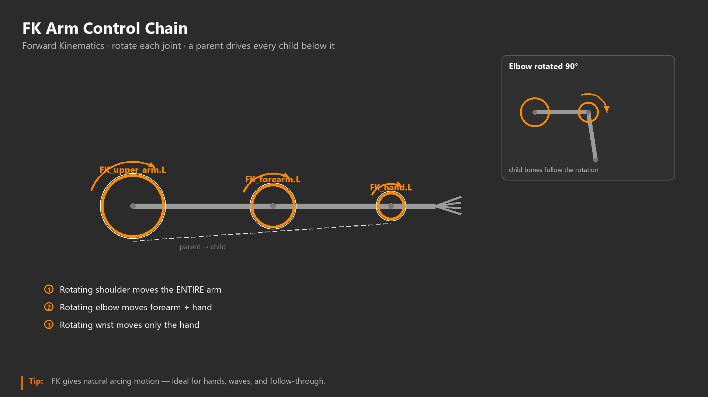
Inverse Kinematics (IK) Explained
💡 IK: Position-Based Control
What It Is:
- You move the END of the chain (e.g., the hand)
- Blender calculates what rotations are needed
- The chain automatically bends to reach the target position
- Example: Move hand control → Blender figures out shoulder/elbow angles automatically
Real-World Analogy:
Imagine a robot arm on a factory assembly line. The operator says "put the gripper at this XYZ coordinate" and the robot's computer calculates all the necessary joint angles. The operator doesn't manually rotate each joint—they just specify where they want the end to be. That's IK! You control the destination, the system figures out the journey.
When IK is Best:
- Planted contacts: Feet on ground, hands on surfaces
- Reaching for specific points: Hand grabbing doorknob, foot on pedal
- Walk/run cycles: Feet need to stay planted as body moves
- Interaction with environment: Pushing, pulling, climbing
- When destination matters more than path: You need hand HERE, don't care how it gets there
IK Advantages:
- ✅ Easy planting: Keep foot glued to ground while body moves
- ✅ Precise positioning: Put hand exactly where you want it
- ✅ Fewer keyframes: Just keyframe the IK control, chain follows automatically
- ✅ Great for contacts: Environmental interaction is simple
- ✅ Intuitive for posing: "Put hand here" is easier than "rotate shoulder 30°, elbow 45°..."
IK Disadvantages:
- ❌ Linear motion: Hand moves in straight line (not natural arc)
- ❌ Flipping issues: Elbow can suddenly flip direction when chain is stretched
- ❌ Less artistic control: You don't decide exact elbow angle—Blender does
- ❌ Requires pole targets: Need additional control to tell elbow which direction to point
- ❌ Can feel stiff: Lacks the organic flow of FK animation
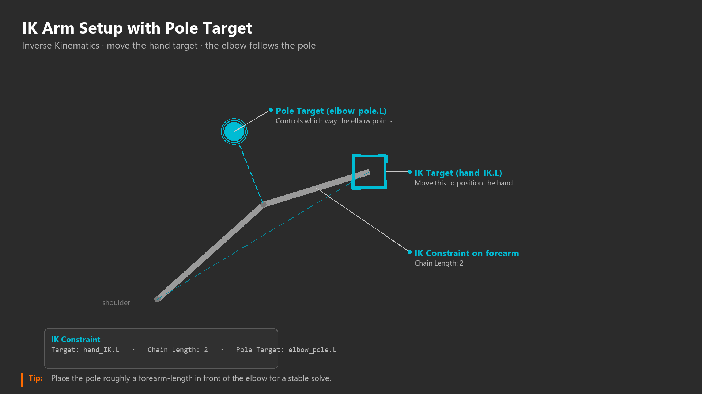
Visual Comparison: FK vs IK
is Result] end subgraph IK["IK (Position-Based)"] B1[Set Hand Position] --> B2[Blender Calculates
Joint Angles] B2 --> B3[Shoulder Auto-Rotates] B2 --> B4[Elbow Auto-Rotates] end style A1 fill:#4CAF50,stroke:#333,stroke-width:2px,color:#fff style B1 fill:#2196F3,stroke:#333,stroke-width:2px,color:#fff
FK vs IK Decision Guide
🎯 When to Use Which?
| Animation Task | Use FK | Use IK | Why? |
|---|---|---|---|
| Walk cycle (feet) | - | ✅ | Feet plant on ground—position critical |
| Walk cycle (arms) | ✅ | - | Arms swing naturally—flow matters |
| Character dancing | ✅ | - | Organic, flowing movement |
| Opening a door | - | ✅ | Hand must stay on doorknob |
| Punching | ✅ | Maybe | FK for windup, IK for contact frame |
| Climbing ladder | - | ✅ | Hands/feet on specific rungs |
| Swimming | ✅ | - | Fluid, arcing strokes |
| Typing on keyboard | - | ✅ | Fingers hit specific keys |
| Waving goodbye | ✅ | - | Natural wrist/elbow rotation |
| Push-ups | - | ✅ | Hands planted, body moves |
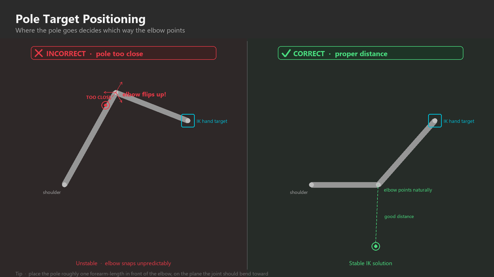
🎨 The Professional Secret: The best rigs offer BOTH FK and IK, with the ability to switch between them! This is called "IK/FK switching" or "snap matching." Start animating a punch in FK for the windup (natural arcing motion), then switch to IK for the contact frame (precise hand placement). Or start a walk cycle in IK (plant feet), then switch an arm to FK for more natural swing. Professional animators switch between modes constantly during animation. We'll build this capability into your rig!
IK/FK Hybrid Approach
✅ Best of Both Worlds
Professional Rigs Include:
- Separate FK and IK bone chains for the same limb
- Deformation bones that can follow either FK or IK
- Influence slider to blend between FK and IK (0% = pure FK, 100% = pure IK)
- Snap buttons to match FK to IK (or vice versa) when switching
Workflow Example - Animating a Punch:
- Windup phase (FK):
- Influence slider at 0% (FK mode)
- Rotate shoulder back, elbow bends
- Natural arcing motion as arm draws back
- Keyframe FK controls
- Switch to IK for contact:
- At contact frame, click "Snap IK to FK"
- IK control jumps to match current hand position
- Animate influence slider from 0% to 100% (FK → IK)
- Move IK hand control to exact impact point
- Keyframe IK control and influence slider
- Follow-through (FK again):
- After impact, snap FK to IK
- Animate influence back to 0% (IK → FK)
- FK controls take over for recoil motion
- Natural arcing follow-through
Result: Smooth, natural motion with precise contact—best of both worlds!
Common IK/FK Mistakes
⚠️ Avoid These Pitfalls
Mistake 1: Using Only IK for Everything
- Problem: Motion looks stiff and robotic (linear paths)
- Why it happens: IK is easier for beginners
- Solution: Use FK for organic, flowing animations
Mistake 2: Using Only FK for Everything
- Problem: Contact poses are tedious, feet slide on ground
- Why it happens: Some animators avoid learning IK
- Solution: Use IK for planted contacts, environmental interaction
Mistake 3: Forgetting Pole Targets (IK)
- Problem: Elbows/knees flip unpredictably
- Why it happens: IK doesn't know which direction joints should point
- Solution: Always setup pole targets to control joint orientation
Mistake 4: Switching IK/FK Mid-Motion Without Snapping
- Problem: Limb pops or jumps when switching modes
- Why it happens: FK and IK controls are in different positions
- Solution: Always snap controls to match before switching influence
Mistake 5: Overextending IK Chains
- Problem: Arm/leg becomes completely straight, locks up
- Why it happens: Moving IK control too far from body
- Solution: Keep slight bend in joints (98% extension max), or add stretch bones
🎯 IK vs FK Summary
- FK (Forward Kinematics): Rotation-based, great for organic flow and arcing motion
- IK (Inverse Kinematics): Position-based, great for planted contacts and precision
- Professional approach: Build rigs with both systems, allow switching
- Decision criteria: Does path matter (FK) or destination matter (IK)?
- Best practice: Use IK/FK hybrid, switch modes during animation
- Always include: Pole targets for IK chains to prevent flipping
- Snap before switching: Match controls to prevent pops when changing modes
Understanding IK vs FK is fundamental to rigging—now let's build these systems!
🎮 Creating Custom Control Bones
Control bones are the "steering wheel" of your rig—the objects animators actually touch. Just like a well-designed car dashboard has different buttons, knobs, and levers for different functions, good rig controls are visually distinct and intuitive to select. A professional rig might have 50+ bones, but only 10-15 control bones the animator needs to care about. Let's learn to create custom control shapes that make your rig a joy to animate with!
Why Custom Control Shapes Matter
🎨 The Problem with Default Bones
Default bone display issues:
- All bones look the same: Hard to distinguish controls from deformation bones
- Small selection area: Tiny bone ends are hard to click accurately
- Cluttered viewport: Overlapping bones create visual chaos
- No functional distinction: Can't tell IK from FK from deformation bones
- Accidental selection: Easy to grab wrong bone (especially deformation bones)
With custom shapes:
- ✅ Instant recognition: Hand control looks like a hand, foot like a foot
- ✅ Large selection targets: Big shapes are easy to click
- ✅ Visual hierarchy: Important controls are bigger/more prominent
- ✅ Functional clarity: Different shapes for different control types
- ✅ Professional appearance: Rig looks polished and production-ready
🎬 Industry Standard: Every professional animation studio uses custom control shapes. Pixar rigs, Disney rigs, game studio rigs—they all have distinctive control shapes. An animator should be able to grab any rig from any show and immediately understand what controls do what just by looking at the shapes. It's a universal language in the animation world!
Common Control Shape Conventions
💡 Standard Control Shapes
Body Controls:
- Root/Master control: Large circle or square around entire character (moves everything)
- Pelvis/COG (Center of Gravity): Circle or rounded square at hips (main body control)
- Torso/Chest: Half-circle or arc at chest (upper body)
- Neck: Small circle at neck base
- Head: Circle or crosshair at head (head rotation)
Limb Controls (IK):
- Hand IK: Hand-shaped control or cube (positioned at wrist)
- Foot IK: Foot-shaped control or rectangle (positioned at ankle)
- Pole targets: Small sphere or diamond (controls elbow/knee direction)
Limb Controls (FK):
- Shoulder/Hip: Circle around joint
- Elbow/Knee: Smaller circle
- Wrist/Ankle: Even smaller circle
- Pattern: FK controls decrease in size down the chain
Special Controls:
- Eye targets: Small crosshair or sphere (eyes look at this)
- Fingers: Very small circles (one per finger bone)
- Face controls: Custom shapes matching facial features (eyebrow arcs, mouth curves)
- Wings/Tails: Custom shapes following appendage shape
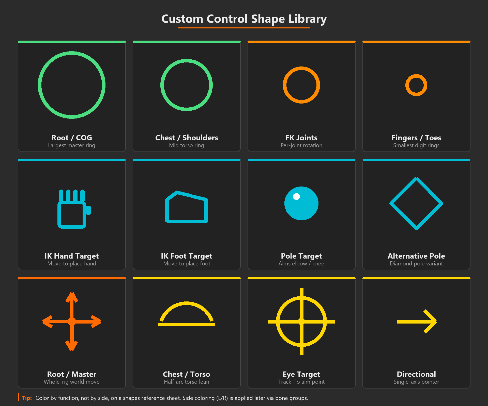
Creating Custom Shapes in Blender
✅ Method 1: Using Mesh Objects as Bone Shapes
Workflow:
- Create shape object:
- Object Mode, add mesh (circle, cube, plane, etc.)
- Edit mesh to desired shape
- Example: Add Circle, scale, rotate to make hand control
- Position shape (optional):
- Shape can be anywhere—position doesn't matter
- Common: Keep all custom shapes in a collection off to the side
- Or: Position at origin (0,0,0) for easy organization
- Assign to bone:
- Select armature, Pose Mode
- Select bone that needs custom shape
- Properties panel > Bone Properties > Viewport Display
- Custom Shape dropdown, select your mesh object
- Adjust display:
- Wireframe: Shows shape as wireframe (less visual clutter)
- Scale: Adjust custom shape size without affecting bone
- At: Position shape at different bone (advanced use)
- Hide original bone:
- Bone Properties > Viewport Display > uncheck "Show Bone"
- Only custom shape is visible (cleaner look)
Pro Tip: Create all custom shapes first, organize in a "Widget" collection, then assign to bones. This keeps your scene organized and makes reusing shapes easy!
Building a Shape Library
📚 Reusable Control Shapes
Common Shapes to Create:
1. Circle Control (most versatile):
- Add Mesh > Circle (32 vertices for smooth look)
- Scale to desired size
- Rotate to align with bone direction (usually 90° on X-axis for vertical bones)
- Uses: Root, COG, neck, head, joints
2. Hand Control:
- Add Mesh > Cube, scale flat (hand-like proportions)
- Or: Add Mesh > Plane, extrude to create hand outline
- Position facing forward (character's hand direction)
- Uses: IK hand controls
3. Foot Control:
- Add Mesh > Cube, scale to foot shape (longer front-to-back)
- Or: Model simple foot outline with vertices
- Heel should be at pivot point (ankle bone position)
- Uses: IK foot controls
4. Pole Target:
- Add Mesh > UV Sphere (low poly, 8 segments enough)
- Or: Single vertex (minimal, but hard to see)
- Or: Diamond shape (4 vertices arranged in pyramid)
- Uses: IK pole targets (elbow/knee direction)
5. Root/Master Control:
- Large circle (twice the size of character)
- Or: Four-arrow shape (indicates can move in all directions)
- Ground level, centered on character
- Uses: Master control that moves entire rig
6. Arrow/Direction Indicator:
- Model simple arrow pointing forward
- Shows which direction is "front" of character
- Uses: Directional controls, parent to root
Advanced Custom Shape Techniques
💡 Professional Shape Tips
Size Hierarchy:
- Most important controls = largest shapes
- Root control: Largest (entire character scale)
- COG/pelvis: Large (hip height diameter)
- Hands/feet IK: Medium (visible but not overwhelming)
- FK joints: Small (decreasing down chain)
- Fingers/details: Tiny (barely visible until zoomed in)
- Why? Easier to select important controls, reduces clutter
Color Coding (Bone Groups):
- Properties > Armature > Bone Groups
- Create groups: "Left", "Right", "Center", "IK", "FK"
- Assign colors:
- Left side: Blue/Cyan (industry standard)
- Right side: Red/Magenta (industry standard)
- Center: Yellow/Green (spine, head, root)
- Special: Purple/Orange (IK targets, switches)
- Assign bones to groups for automatic coloring
Layering Controls:
- Use bone layers to organize controls:
- Layer 1: Main controls (what animator uses 90% of time)
- Layer 2: Secondary controls (hands, feet details)
- Layer 3: FK controls (if rig has IK/FK switch)
- Hidden layers: Deformation bones, mechanism bones
- Viewport > Armature panel shows layer visibility toggles
- Animator can hide layers they're not currently using
Custom Shape Scaling:
- Bone Properties > Viewport Display > Custom Shape Scale
- Adjust without editing mesh object
- Useful for fine-tuning control sizes after assignment
- Can also scale on individual axes (X, Y, Z Scale)
Shape at Different Bone:
- Bone Properties > Viewport Display > Custom Shape At
- Display shape at different bone's position
- Use case: Control bone is offset, but want shape to appear at deformation bone location
- Advanced technique for complex rigs
Practical Example: Hand Control Setup
✅ Step-by-Step: Custom Hand IK Control
Goal: Create a hand-shaped control for IK hand bone
- Create hand shape mesh:
- Object Mode: Add > Mesh > Cube
- Scale flat:
S Z 0.1(thin like hand) - Scale wide:
S X 0.6(hand proportions) - Tab into Edit Mode
- Select front vertices, extrude
Eslightly (thumb) - Tab out to Object Mode
- Rename: "SHAPE_hand_IK"
- Position shape (optional):
- Move to origin:
Alt+G(reset location) - Or move to collection "Widgets" for organization
- Position doesn't affect how it looks on bone
- Move to origin:
- Assign to hand IK bone:
- Select armature, Pose Mode
- Select hand IK control bone (e.g., "hand_IK.L")
- Properties > Bone Properties > Viewport Display
- Custom Shape > select "SHAPE_hand_IK"
- Shape appears at bone location!
- Adjust display:
- If shape too small: Increase Custom Shape Scale (try 2.0)
- If rotated wrong: Edit shape mesh in Edit Mode, rotate
- Uncheck "Show Bone" to hide default bone display
- Add color:
- Armature Properties > Bone Groups
- Create group "Left_Controls" (blue color)
- Bone Properties > Relations > Bone Group > "Left_Controls"
- Hand control now displays in blue!
- Repeat for right hand:
- Use same shape mesh (reusable!)
- Select "hand_IK.R" bone
- Assign same custom shape
- Assign to "Right_Controls" bone group (red color)
Result: Clean, hand-shaped controls that are easy to select and color-coded by side. Professional!
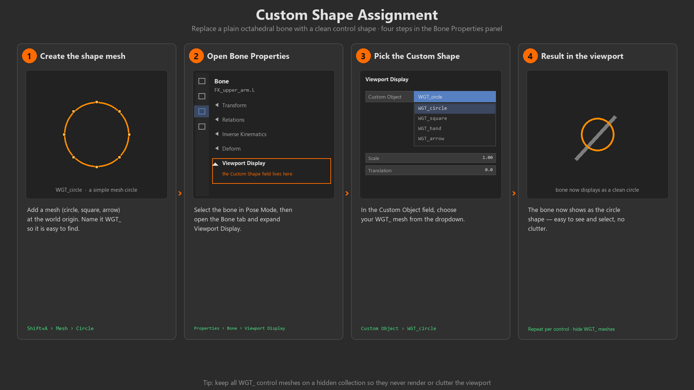
Organizing Control Shapes
📁 Shape Management Best Practices
Collection Strategy:
- Create collection: "Widgets" or "Control_Shapes"
- Move all custom shape meshes into this collection
- Hide collection from viewport (eye icon off)
- Exclude from render (camera icon off)
- Why? Keeps shapes out of the way but still accessible
Naming Convention:
- Prefix all shapes: "SHAPE_" or "WGT_" (widget)
- Descriptive names: SHAPE_hand_IK, SHAPE_foot_IK, SHAPE_circle_large
- Why? Easy to identify in custom shape dropdown, grouped together alphabetically
Reusability:
- One circle shape can be used for multiple bones
- Different scale settings per bone even with same shape
- Build library of 10-15 shapes, reuse across rigs
- Save shape collection in .blend file, append to new projects
Shape Complexity:
- Keep shapes simple: Low poly counts (under 100 vertices typically)
- Why? Complex shapes slow down viewport, harder to select
- Exception: Face controls can be detailed (eyebrow curves, mouth shapes)
💭 Shape Philosophy: Custom control shapes are like the knobs and buttons on a music synthesizer. Each knob looks different and is positioned logically—frequency knobs together, filter knobs together, volume big and prominent. Same with rig controls! Hand controls look like hands, foot controls like feet, root control is large and central. An animator shouldn't have to think about which control to grab—it should be visually obvious. Spend time on good custom shapes up front, and animation becomes significantly faster and more enjoyable!
🎯 Custom Control Shapes Summary
- Purpose: Make controls visually distinct, easy to select, intuitive to use
- Creation: Use mesh objects, assign via Bone Properties > Custom Shape
- Standard shapes: Circle (versatile), hand/foot outlines, spheres for targets
- Size hierarchy: Important controls larger, details smaller
- Color coding: Use bone groups (left=blue, right=red, center=yellow)
- Organization: Store shapes in "Widgets" collection, prefix names with SHAPE_
- Reusability: Same shape mesh can be assigned to multiple bones
- Professional standard: Every production rig uses custom shapes
Custom shapes complete! Now let's build IK chain systems!
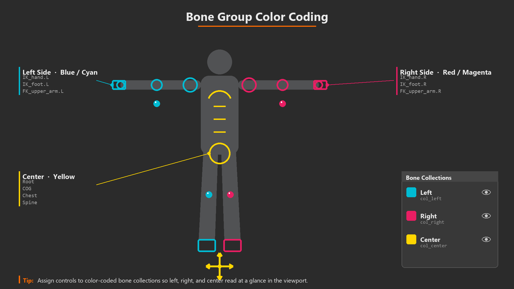
⛓️ Building IK Chain Systems
IK (Inverse Kinematics) chains are the foundation of position-based control. Instead of manually rotating every joint, you move one control and Blender calculates all the necessary rotations automatically. Setting up IK properly is critical—done right, it makes animation effortless. Done wrong, it creates unpredictable flipping and frustration. Let's build rock-solid IK systems that animators will love!
IK Chain Anatomy
🔍 Components of an IK System
Every IK setup requires three elements:
1. The Chain (Deformation Bones)
- The bones that will deform the mesh
- Example: Upper arm → Forearm → Hand
- Or: Thigh → Shin → Foot
- Must be connected in parent-child hierarchy
- Minimum 2 bones, typically 2-3 bones per chain
2. The IK Target (Control Bone)
- The bone the animator moves
- Positioned at the END of the chain (e.g., at hand or foot)
- Can be anywhere in 3D space
- Chain reaches toward this target position
- Usually has custom shape (hand/foot outline)
3. The Pole Target (Direction Control)
- Tells the middle joint which direction to point
- Example: Elbow points toward pole target
- Prevents flipping when arm/leg is straight
- Positioned in front of (or behind) the limb
- Critical! IK without pole target is unpredictable
DEF Bone] --> B[Forearm
DEF Bone] B --> C[Hand
DEF Bone] D[Hand IK Target
CTRL Bone] -.controls.-> C E[Elbow Pole Target
CTRL Bone] -.controls.-> B F[IK Constraint
on Forearm] --> D F --> E style D fill:#4CAF50,stroke:#333,stroke-width:2px,color:#fff style E fill:#2196F3,stroke:#333,stroke-width:2px,color:#fff
Setting Up Basic IK Chain
✅ Step-by-Step: Arm IK Setup
Starting Point: Weighted character with upper_arm, forearm, hand bones
Step 1: Create IK Target Bone
- Select armature, Edit Mode
- Select hand bone (end of arm chain)
Shift+Dto duplicate,Enterimmediately (duplicate in place)- Rename: "hand_IK.L" (or similar)
- Clear parent:
Alt+P> Clear Parent (keep transform) - Now it's independent control bone at hand position
Step 2: Create Pole Target Bone
- Still in Edit Mode
- Add new bone:
Shift+A> Single Bone - Position in front of elbow (where elbow should point)
- Rename: "elbow_pole.L"
- Scale small (
S 0.2) - just needs to be clickable - Clear parent (should be independent)
Step 3: Add IK Constraint
- Pose Mode
- Select forearm bone (middle of chain, NOT hand!)
- Properties > Bone Constraints > Add Constraint > Inverse Kinematics
- Constraint settings:
- Target: Select your armature
- Bone: Select "hand_IK.L" from dropdown
- Chain Length: Set to 2 (upper arm + forearm)
- Pole Target: Select your armature
- Bone: Select "elbow_pole.L" from dropdown
- Pole Angle: Adjust if elbow points wrong direction (try 90°, -90°, 180°)
Step 4: Test and Adjust
- Pose Mode, select hand_IK.L control
- Move it around (
Gto grab) - Arm should follow, elbow bending naturally!
- If elbow flips: Adjust Pole Angle in constraint
- If arm doesn't reach: Check chain length (should be 2)
- Move pole target: Elbow direction changes
Step 5: Add Custom Shapes
- Create hand-shaped mesh (see previous section)
- Assign to hand_IK.L bone
- Create sphere mesh for pole target
- Assign to elbow_pole.L bone
- Now controls are easy to identify and select!
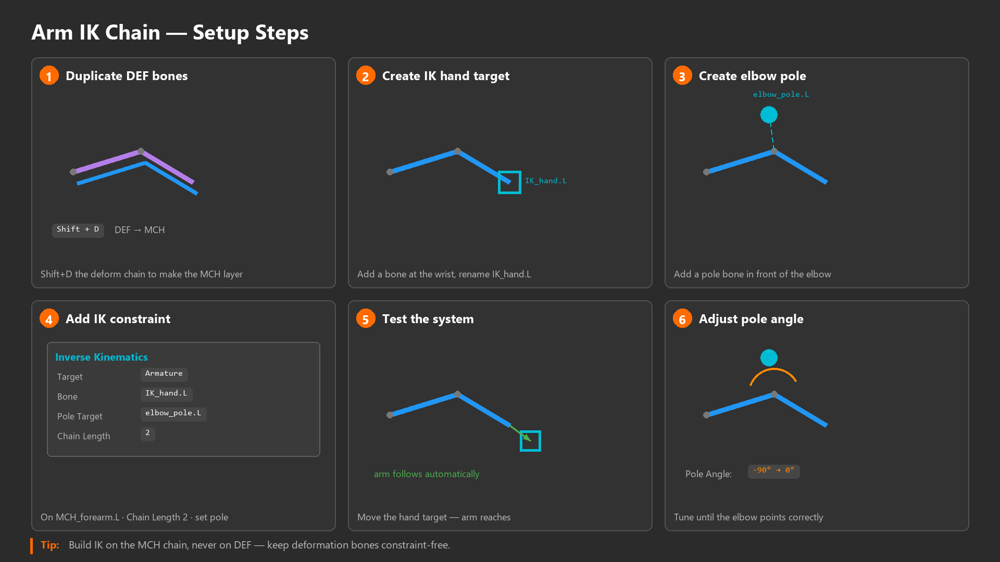
Understanding Chain Length
💡 Chain Length Parameter
What It Does:
- Defines how many bones "up" the chain are affected by IK
- Counted from the bone with the IK constraint
- Example: Constraint on forearm, chain length 2 = forearm + upper arm
Common Settings:
- Chain Length 0: Affects entire chain to root (often too much!)
- Chain Length 2: Standard for arms/legs (2 bones: upper + lower)
- Chain Length 3: Include shoulder/hip (more complex FK/IK blend)
- Chain Length 1: Just the bone with constraint (rarely useful)
Choosing Chain Length:
- Arm IK: Usually 2 (upper arm + forearm)
- Shoulder stays stable, arm reaches
- More control over shoulder rotation separately
- Leg IK: Usually 2 (thigh + shin)
- Hip stays stable, leg plants
- Body can move while foot stays planted
- Longer chains (3+): Advanced rigs
- More natural motion but less predictable
- Professional rigs may use different chain lengths per situation
Pole Target Best Practices
🎯 Pole Target Positioning
Where to Place Pole Targets:
Arm Pole Targets (Elbows):
- Position: In front of character, elbow-height, slightly outward
- Direction: Elbows naturally point down and slightly outward
- Distance: About forearm-length in front of elbow
- Test pose: Arms at sides, elbows should point naturally down/back
Leg Pole Targets (Knees):
- Position: In front of character, knee-height, along leg line
- Direction: Knees point forward when standing
- Distance: About shin-length in front of knee
- Test pose: Standing neutral, knees point straight ahead
Common Pole Target Mistakes:
- ❌ Too close: Pole too near joint causes instability
- ❌ Wrong plane: Pole not aligned with joint bend direction
- ❌ Symmetry wrong: Left and right poles not mirrored properly
- ❌ No parent: Poles should usually parent to root/COG for easy movement
Advanced Pole Setup:
- Parent to IK control: Pole follows hand/foot (automatic)
- Parent to root: Pole stays in world space (manual control)
- Switch option: Property to toggle pole parenting (pro rigs)
- Most common: Parent to root with offset, animator moves when needed
Pole Angle Adjustment
⚠️ Fixing Pole Angle Issues
Problem: Elbow/knee points wrong direction even with pole target
Solution: Adjust Pole Angle
- Select bone with IK constraint
- Bone Constraints panel > IK constraint
- Pole Angle slider (in degrees)
- Try common values:
- 0° (default)
- 90° (rotate pole direction 90°)
- -90° (opposite rotation)
- 180° (flip direction)
- Scrub slider until elbow points at pole target correctly
Why This Happens:
- Pole target defines a direction (vector from chain to pole)
- But Blender needs to know bone's "up" direction to calculate rotation
- Pole angle rotates around the bone's axis
- Different bone roll values need different pole angles
Pro Tip: Set pole angle ONCE when building rig, then leave it. Moving pole target changes elbow direction, but pole angle stays constant.
IK Stretch Option
✅ Allowing Limb Stretch
Problem: When IK target moves too far, limb becomes fully straight and "locks"
Solution 1: Limit Movement (Realistic)
- Leave IK constraint with default settings
- Limb reaches maximum extension and stops
- Realistic: Real arms/legs can't over-extend
- Best for: Realistic animation, subtle characters
Solution 2: Enable Stretch (Cartoony)
- IK Constraint > Enable Stretch checkbox
- Bones lengthen when target is farther than chain length
- Creates exaggerated, "rubber hose" animation
- Best for: Cartoon rigs, stylized characters, comedy
Stretch Options:
- Influence: 0.0-1.0, how much stretch is allowed
- 1.0: Full stretch (infinite elasticity)
- 0.5: Partial stretch (subtle exaggeration)
- 0.0: No stretch (realistic limits)
Professional Use:
- Most realistic rigs: Stretch disabled
- Cartoon rigs: Stretch enabled with influence 1.0
- Hybrid approach: Add stretch as animatable property (keyframe on/off per shot)
Mirroring IK Setup (Left to Right)
🔄 Symmetrical IK Creation
Option 1: Manual Mirror (Beginner-Friendly)
- Setup IK on left arm completely
- Edit Mode, select hand_IK.L bone
Shift+D,X, type "-1" (mirror across X-axis)- Rename to hand_IK.R
- Repeat for pole target
- Pose Mode, select forearm.R
- Add IK constraint, set targets to .R bones
- Copy pole angle from left side
Option 2: X-Axis Mirror (Faster)
- Edit Mode, select all left-side IK bones (hand_IK.L, pole.L)
- Menu: Armature > Symmetrize
- Creates .R versions automatically
- Pose Mode, copy IK constraint from forearm.L
- Paste to forearm.R
- May need to manually set target bones to .R versions
Option 3: Copy/Paste Constraint (Professional)
- Pose Mode, select forearm.L (has IK constraint)
- Bone Constraints panel, constraint options menu (⌄)
- Copy to Selected Bones
- Select forearm.R
- Constraint appears, but targets are wrong
- Manually change targets from .L to .R bones
Pro Tip: Name bones with .L and .R suffixes (Blender standard). Many tools auto-detect and mirror correctly!
Troubleshooting IK Issues
⚠️ Common IK Problems and Fixes
Problem: Chain doesn't move when IK target moves
- Check 1: IK constraint Target set correctly?
- Check 2: Chain Length correct? (should be 2 for arms/legs)
- Check 3: Constraint influence at 1.0?
- Check 4: Bones in chain properly parented?
Problem: Elbow/knee flips unexpectedly
- Cause: No pole target, or pole target positioned wrong
- Fix: Add pole target in front of limb, adjust pole angle
Problem: Elbow points backward/wrong direction
- Cause: Pole angle incorrect
- Fix: Adjust Pole Angle in constraint (try 90°, -90°, 180°)
Problem: Arm doesn't reach IK target fully
- Cause 1: Chain length too short (only affecting some bones)
- Fix: Increase chain length
- Cause 2: Target too far (exceeds arm length)
- Fix: Enable Stretch, or move target closer
Problem: IK behaves erratically, unpredictable motion
- Cause: Bones in chain not properly connected (broken hierarchy)
- Fix: Edit Mode, ensure bones are Connected (not just parented)
Problem: Deformation bones rotate, but mesh doesn't deform
- Cause: Weights not painted, or wrong vertex groups
- Fix: Check Weight Paint Mode, ensure bones have weights
💭 IK Setup Philosophy: Setting up IK is like installing power steering in a car. Without it, turning the wheel (rotating joints) requires lots of effort and precision. With it, you simply point where you want to go (move IK target) and the system does the work. But power steering needs to be installed correctly—wrong fluid pressure (pole angle) or misaligned components (chain length) makes it worse than manual! Take time to set up IK properly, test thoroughly, and you'll have a rig that feels effortless to animate.
🎯 IK Chain Systems Summary
- Three components: Chain (deformation bones), IK target (control), pole target (direction)
- Setup location: Add IK constraint to MIDDLE bone (forearm, shin)
- Chain length: Typically 2 for arms/legs (upper + lower limb)
- Pole target: CRITICAL! Place in front/behind limb, adjust pole angle
- Stretch option: Enable for cartoon rigs, disable for realistic
- Mirroring: Use .L/.R naming for automatic symmetry tools
- Testing: Move IK target around, ensure predictable behavior
- Custom shapes: Assign to IK controls for easy selection
IK chains complete! Next: Essential bone constraints!
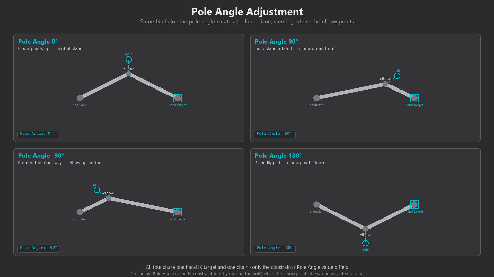
🔗 Essential Bone Constraints
Bone constraints are the automation layer of your rig—they make bones follow other bones, copy rotations, limit movement, and create relationships that would be impossible to animate manually. Think of constraints like invisible puppet strings that connect parts of your rig together. IK is just one type of constraint; there are many others that professional riggers use to create intelligent, animator-friendly rigs. Let's explore the essential constraints every rigger needs to know!
Understanding Constraints
🎓 What Constraints Do
Core Concept:
- Constraints create automatic relationships between bones
- Applied to one bone (the "constrained" bone)
- References another bone (the "target" bone)
- Result: Constrained bone follows/copies target automatically
Why Use Constraints?
- Automation: One control drives multiple bones
- Simplification: Complex motion from simple input
- Consistency: Relationships stay predictable
- Example: Eyes automatically look at target (don't need to manually rotate both eyeballs)
Constraint Influence:
- Every constraint has an Influence slider (0.0 to 1.0)
- 1.0: Full effect (bone completely follows constraint)
- 0.5: Halfway blend (50% manual control, 50% constraint)
- 0.0: No effect (constraint disabled but settings preserved)
- Can animate influence over time (constraint on/off during animation)
Copy Location Constraint
✅ Copy Location: Follow Another Bone's Position
What It Does:
- Makes bone move to same position as target bone
- Copies X, Y, and/or Z coordinates
- Bone "sticks to" target location
Common Uses:
- Weapon attachment: Sword bone follows hand bone position
- Eye tracking: Eye target follows head movement
- Accessory rigging: Hat follows head, cape follows back
- Parenting alternative: Follow position but not rotation
Setup:
- Pose Mode, select bone that should follow
- Bone Constraints > Add Constraint > Copy Location
- Target: Select armature
- Bone: Select bone to follow
- Constrained bone now moves with target!
Options:
- X, Y, Z checkboxes: Copy only specific axes
- Example: Copy X and Z but not Y (follow horizontally, not vertically)
- Invert: Move opposite direction from target
- Offset: Maintain original distance from target
- Target/Owner Space: Local vs World coordinates (advanced)
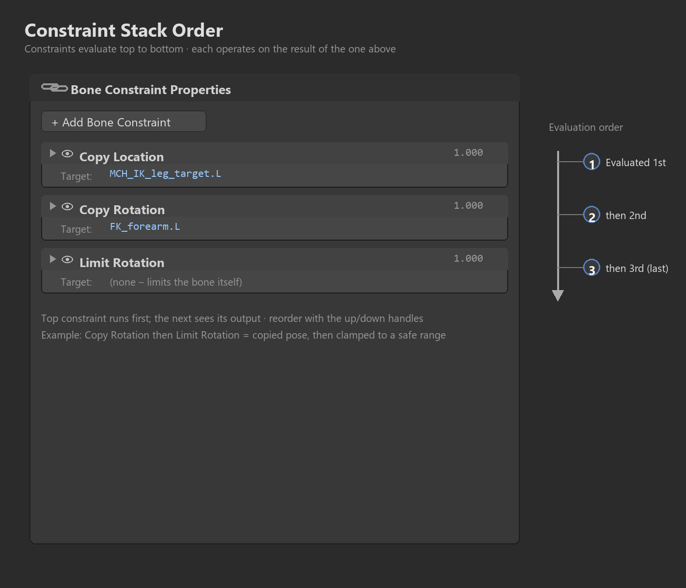
Copy Rotation Constraint
💡 Copy Rotation: Match Another Bone's Rotation
What It Does:
- Makes bone rotate to match target bone's rotation
- Copies rotation on X, Y, and/or Z axes
- Bone "aligns with" target orientation
Common Uses:
- FK to IK matching: FK bones copy IK bone rotations (for IK/FK switching)
- Shoulder automation: Shoulder twists when arm rotates
- Mechanical rigs: Gears, pistons follow each other's rotation
- Symmetry helper: Right side copies left side rotation (for symmetric posing)
Setup:
- Pose Mode, select bone that should rotate with another
- Bone Constraints > Add Constraint > Copy Rotation
- Target: Select armature
- Bone: Select bone to copy from
- Constrained bone now rotates with target!
Options:
- X, Y, Z checkboxes: Copy rotation on specific axes only
- Invert: Rotate opposite direction (mirror effect)
- Mix: How to combine with existing rotation
- Replace: Completely override (default)
- Add: Add target rotation to existing
- Before/After Original: Order of rotation application
Practical Example - Shoulder Automation:
- Problem: When arm lifts, shoulder should roll forward slightly (realistic anatomy)
- Solution:
- Add Copy Rotation constraint to shoulder bone
- Target: Upper arm bone
- Copy only Y-axis rotation (roll)
- Influence: 0.3 (30% of arm rotation affects shoulder)
- Result: Shoulder automatically rotates when arm moves—more natural!
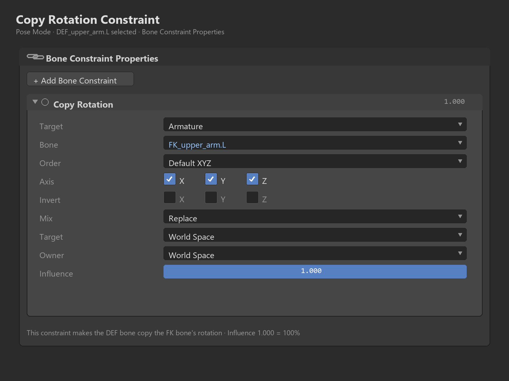
Limit Rotation Constraint
✅ Limit Rotation: Prevent Unrealistic Bending
What It Does:
- Restricts how far a bone can rotate on each axis
- Sets minimum and maximum rotation angles
- Prevents impossible poses (elbow bending backward, head spinning 360°)
Common Uses:
- Elbow/knee limits: Only bend forward, not backward
- Example: Elbow can bend 0° to 150° (straight to fully bent)
- Head rotation: Can't twist neck more than 90° left/right
- Spine limits: Torso can't bend too far backward (prevent inversion)
- Mechanical joints: Hinge only rotates within specific range
Setup:
- Pose Mode, select bone that needs limits
- Bone Constraints > Add Constraint > Limit Rotation
- Enable axis to limit (X, Y, or Z checkbox)
- Set Min and Max angles for that axis
- Repeat for other axes if needed
Example - Elbow Limit:
- Forearm bone (bends at elbow)
- Assuming bend is on X-axis:
- Enable X axis limit
- Min: 0° (straight arm)
- Max: 150° (fully bent, just before bicep touches forearm)
- Result: Can't bend elbow backward (realistic!)
Important Notes:
- Local rotation: Limits use bone's local axes (not world space)
- Axis determination: Test which axis controls which rotation (varies by bone orientation)
- Transform space: Usually use "Local Space" for predictable limits
- Influence: Can reduce to allow slight over-extension if needed
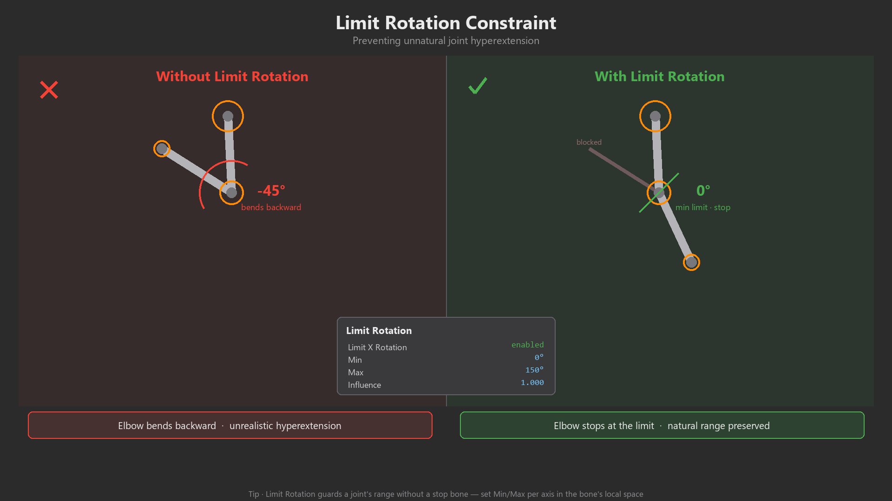
Track To Constraint
💡 Track To: Always Point at Target
What It Does:
- Makes bone constantly point toward a target
- Automatically rotates to keep aimed at target position
- Like a compass needle always pointing north
Common Uses:
- Eye tracking: Eyes follow an "eye target" control (most common use!)
- Move one target, both eyes look at it
- Essential for character eye animation
- Head turning: Head automatically faces character's focus point
- Weapon aiming: Gun barrel points where character is looking
- Searchlight/camera: Always aimed at specific object
Setup - Eye Tracking Example:
- Create eye target control:
- Add bone in front of face (where character looks)
- Name: "eye_target"
- Parent to head (target moves with head)
- Constrain left eye:
- Select left eye bone
- Add Constraint > Track To
- Target: Armature, Bone: eye_target
- To: -Z (eye points along negative Z axis—test which direction!)
- Up: Y (eye's up direction)
- Repeat for right eye
- Test: Move eye_target, both eyes follow it!
Options:
- To: Which axis of bone points at target
- Usually -Z or Y for eyes (depends on how bone is oriented)
- Test to find correct axis
- Up: Which axis is "up" (prevents roll)
- Target Z: Use target's Z-axis as up direction (advanced)
- Influence: Reduce for partial tracking (lazy eyes effect)
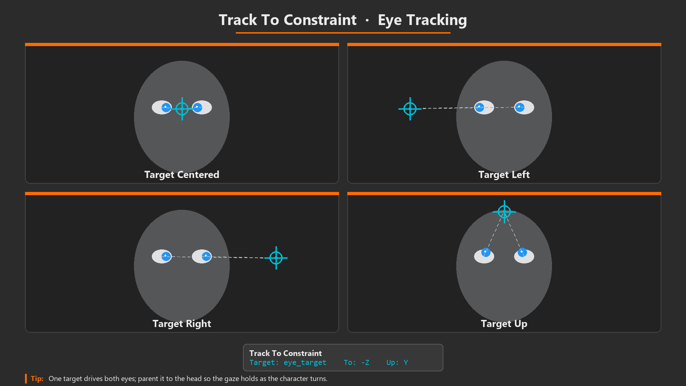
Damped Track Constraint
🎯 Damped Track: Simplified Tracking
What It Does:
- Similar to Track To, but simpler
- Bone points at target with minimal twisting
- Single axis points at target (you choose which)
- No "up" vector needed (less configuration)
When to Use:
- Simpler alternative to Track To: When you don't need precise up-axis control
- Chain tracking: Spine segments point toward target
- Tentacles/tails: Each segment aims slightly toward target
- Less gimbal lock: More stable for some bone orientations
Setup:
- Select bone that should track
- Add Constraint > Damped Track
- Target: Select armature and bone
- Track Axis: Choose which axis points at target (usually -Y or -Z)
- Done! Simpler than Track To (no up axis needed)
Track To vs Damped Track:
- Track To: More control (specify up axis), more complex setup
- Damped Track: Less control, simpler setup, faster to configure
- Try Damped Track first; if bone twists wrong, use Track To
Stretch To Constraint
✅ Stretch To: Extend Bone to Reach Target
What It Does:
- Bone stretches (scales) to reach target position
- Length changes to bridge distance between bone and target
- Also points at target (combines tracking + stretching)
Common Uses:
- Cartoon rigs: Limbs that stretch and squash
- Mechanical rigs: Pistons that extend/retract
- Muscle bulge: Bicep bone stretches when arm bends (visual effect)
- Procedural motion: Rope/chain segments stretch between points
Setup:
- Select bone that should stretch
- Add Constraint > Stretch To
- Target: Select armature and target bone
- Rest Length: Original bone length (auto-calculated)
- Bone now stretches to reach target!
Options:
- Volume Variation: Preserve volume when stretching
- XZ or YZ: Bone gets thinner when longer (realistic)
- None: Just stretches (less realistic)
- Volume Min/Max: Limit how thin/thick bone can get
- Smooth: Gradual stretch (less jarring)
Realistic Rig Use:
- Usually NOT used in realistic character rigs (arms don't stretch!)
- Cartoon/stylized rigs: Essential for exaggerated animation
- Mechanical/technical rigs: Perfect for pistons, springs
Child Of Constraint
💡 Child Of: Dynamic Parenting
What It Does:
- Makes bone behave as child of target (like parenting)
- BUT can be animated on/off (unlike permanent parenting)
- Bone follows target's location, rotation, and scale
Why Not Just Parent?
- Parenting is permanent: Bone always follows parent
- Child Of can be keyframed: Bone follows parent sometimes, not always
- Example: Hand picks up object (parents to hand), then drops it (unparents)
Common Uses:
- Object handoff: Ball parents to hand, then to other hand, then to world
- Foot planting: Foot parents to floor (planted), then to leg (lifts)
- Weapon switching: Sword parents to hand, then to back holster
- Character interaction: Hand parents to doorknob while turning
Setup:
- Select bone that should become child
- Add Constraint > Child Of
- Target: Select armature and parent bone
- Click Set Inverse button (important!)
- Calculates offset from target
- Prevents bone from jumping when constraint applied
- Bone now follows target!
Animating Parent Switching:
- Frame 1: Hand free (influence 0.0), keyframe influence
- Frame 20: Hand grabs ball, position hand on ball
- Frame 21: Set Child Of influence to 1.0, keyframe
- Ball now follows hand
- Frame 100: Hand releases, set influence to 0.0, keyframe
- Result: Ball sticks to hand from frame 21-100, free otherwise!
Pro Tip: Always keyframe influence BEFORE and AFTER the change (frames 20 and 21 in example) for clean switching!
Constraint Best Practices
⚠️ Professional Constraint Usage
Constraint Stack Order Matters:
- Constraints are evaluated top-to-bottom
- Order affects final result
- Example: Copy Location THEN Copy Rotation ≠ Copy Rotation THEN Copy Location
- Reorder by dragging constraints in panel
Use Influence for Fine Control:
- Don't think of constraints as on/off (0 or 1)
- Influence 0.5 = 50% constraint, 50% manual control
- Useful for subtle automation (shoulder follows arm at 30%)
- Can keyframe influence for variable effect over time
Name Your Constraints:
- Multiple constraints on one bone gets confusing
- Rename constraints to describe their purpose
- Default: "Copy Rotation"
- Better: "Shoulder Auto-Rotate"
- Constraint panel has rename field
Mute vs Delete:
- Mute constraint: Eye icon in constraint panel (temporarily disable, keep settings)
- Delete constraint: X button (permanently remove)
- Use mute for testing/troubleshooting
- Delete only when certain you don't need it
Constraints Slow Viewport:
- Each constraint adds calculation time
- Too many constraints = laggy viewport
- Use constraints purposefully, not excessively
- Mute unused constraints during animation
- Consider baking constraints for final animation (advanced)
💭 Constraint Philosophy: Constraints are the "magic" in rigging. They create relationships that would be tedious or impossible to animate manually. Eyes tracking a target, shoulders rotating with arms, feet planting on ground—these are solved problems thanks to constraints. But like any powerful tool, they require understanding to use well. Start simple (one or two constraints per rig), learn how each behaves, then build complexity. The best rigs use just enough constraints to make animation easy, but not so many that the rig becomes slow or unpredictable!
🎯 Essential Constraints Summary
- Copy Location: Bone follows another's position (accessories, attachments)
- Copy Rotation: Bone matches another's rotation (FK/IK sync, automation)
- Limit Rotation: Prevent unrealistic bending (elbows, necks, joints)
- Track To: Bone always points at target (eyes, weapons, cameras)
- Damped Track: Simplified tracking (tentacles, chains)
- Stretch To: Bone extends to reach target (cartoon rigs, pistons)
- Child Of: Animatable parenting (pick up/drop objects)
- Influence: All constraints have 0-1 influence (blend manual + automatic)
- Stacking: Multiple constraints per bone, evaluated top-to-bottom
Constraints mastered! Time to rig complete arms and legs!
💪 Rigging Arms with IK/FK
Arms are one of the most animated parts of any character—waving, gesturing, grasping, pushing, pulling. A professional arm rig needs both IK (for precise hand placement) and FK (for natural swinging motion), with the ability to switch between them seamlessly. Let's build a complete arm rig that gives animators maximum flexibility and control. This is the foundation of all limb rigging!
Arm Rig Components
🏗️ Complete Arm Rig Architecture
A professional arm rig includes:
1. Deformation Bones (DEF Layer)
- DEF_upper_arm.L - Shoulder to elbow (weighted to mesh)
- DEF_forearm.L - Elbow to wrist (weighted to mesh)
- DEF_hand.L - Wrist to fingertips (weighted to mesh)
- These NEVER touched by animator directly
2. FK Control Bones (CTRL Layer)
- FK_upper_arm.L - Circle control at shoulder
- FK_forearm.L - Circle control at elbow
- FK_hand.L - Circle control at wrist
- Chain: Each parents to previous (shoulder → elbow → wrist)
- Animator rotates these for FK animation
3. IK Control Bones (CTRL Layer)
- IK_hand.L - Hand-shaped control at wrist position
- IK_elbow_pole.L - Small sphere control in front of elbow
- Independent controls (no parenting between them)
- Animator moves these for IK animation
4. Mechanism Bones (MCH Layer)
- MCH_IK_upper_arm.L - Driven by IK constraint
- MCH_IK_forearm.L - Driven by IK constraint
- These calculate IK solution, hidden from animator
5. Switch Property (Armature Custom Property)
- Custom property: "arm_IK_FK.L" (value 0.0 to 1.0)
- 0.0 = Pure FK, 1.0 = Pure IK, 0.5 = 50/50 blend
- Drives which system controls deformation bones
Shoulder/Elbow/Wrist] -.influence 0.0-1.0.-> D[DEF Bones
Deform Mesh] B[IK Control
Hand Position] -.influence 1.0-0.0.-> D C[Pole Target
Elbow Direction] -.controls.-> B E[IK/FK Switch
Custom Property] -.drives.-> A E -.drives.-> B style D fill:#3a3a3a,stroke:#333,stroke-width:2px,color:#fff style E fill:#4CAF50,stroke:#333,stroke-width:2px,color:#fff
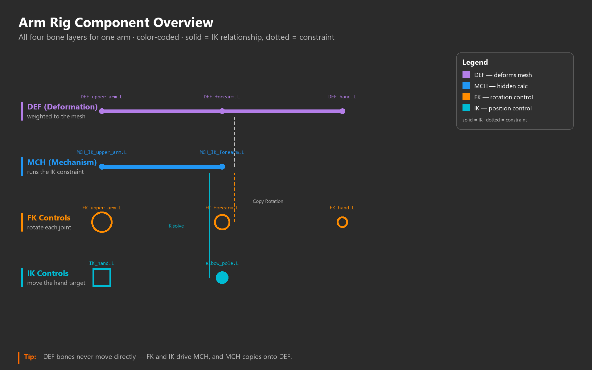
Step-by-Step: Building the Arm Rig
✅ Phase 1: Setup Deformation Bones
Starting Point: Character with basic arm bones (upper_arm, forearm, hand) and weights painted
- Rename deformation bones:
- Edit Mode, select upper_arm.L
- Rename to "DEF_upper_arm.L"
- Repeat for forearm.L → "DEF_forearm.L"
- Repeat for hand.L → "DEF_hand.L"
- Clear naming convention = professional rig!
- Organize into bone layer:
- Select all DEF bones
- Properties > Bone > Relations
- Move to layer 31 (or any hidden layer)
- Deformation bones now hidden from animator
- Lock transforms (optional but recommended):
- Properties > Bone > Transform Locks
- Lock all location/rotation/scale
- Prevents accidental direct manipulation
💡 Phase 2: Create FK Control Chain
- Duplicate DEF bones for FK controls:
- Edit Mode, select DEF_upper_arm.L
Shift+D,Enter(duplicate in place)- Rename to "FK_upper_arm.L"
- Repeat for forearm and hand
- Result: FK chain at same positions as DEF chain
- Clear parents on FK bones:
- Select all three FK bones
Alt+P> Clear Parent (Keep Transform)- They're temporarily disconnected
- Re-parent FK chain correctly:
- Select FK_hand.L, then Shift-select FK_forearm.L
Ctrl+P> Keep Offset- Select FK_forearm.L, then Shift-select FK_upper_arm.L
Ctrl+P> Keep Offset- Chain: FK_upper_arm → FK_forearm → FK_hand
- Parent FK chain to shoulder/clavicle:
- Select FK_upper_arm.L
- Shift-select shoulder or clavicle bone (if rig has one)
Ctrl+P> Keep Offset- Arm now moves with shoulder/body
- Add custom shapes to FK controls:
- Pose Mode, select FK_upper_arm.L
- Properties > Bone > Viewport Display > Custom Shape
- Select circle shape (or create one)
- Repeat for FK_forearm.L (smaller circle)
- Repeat for FK_hand.L (even smaller circle)
- Visual hierarchy: Largest → smallest down chain
- Organize to bone layer:
- Move FK controls to layer 1 (main control layer)
- Assign to bone group "Left_FK" (blue color)
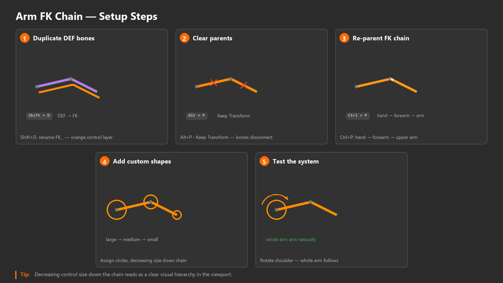
✅ Phase 3: Create IK Control System
- Duplicate DEF bones for IK mechanism:
- Edit Mode, select DEF_upper_arm.L and DEF_forearm.L (NOT hand)
Shift+D,Enter- Rename to "MCH_IK_upper_arm.L" and "MCH_IK_forearm.L"
- These will have the IK constraint
- Create IK hand control:
- Edit Mode, duplicate DEF_hand.L
- Rename to "IK_hand.L"
- Clear parent (
Alt+P> Clear Parent, Keep Transform) - This is what animator moves
- Create elbow pole target:
- Edit Mode,
Shift+A> Single Bone - Position in front of elbow (about forearm-length away)
- Rename to "IK_elbow_pole.L"
- Scale small (
S 0.3) - Clear parent (should be independent)
- Edit Mode,
- Add IK constraint to mechanism bones:
- Pose Mode, select MCH_IK_forearm.L
- Add Constraint > Inverse Kinematics
- Target: Armature, Bone: IK_hand.L
- Chain Length: 2
- Pole Target: Armature, Bone: IK_elbow_pole.L
- Pole Angle: Adjust until elbow points correctly (try 90°, -90°)
- Add custom shapes to IK controls:
- IK_hand.L: Hand-shaped control (large, easy to grab)
- IK_elbow_pole.L: Small sphere or diamond
- Organize IK bones:
- IK controls: Layer 1 (main controls), bone group "Left_IK" (cyan color)
- MCH bones: Layer 30 (hidden mechanism layer)
💡 Phase 4: Connect Systems to Deformation Bones
Goal: DEF bones should follow either FK or IK based on switch property
- Add Copy Rotation constraints (FK to DEF):
- Pose Mode, select DEF_upper_arm.L
- Add Constraint > Copy Rotation
- Target: Armature, Bone: FK_upper_arm.L
- Influence: 1.0 (for now, we'll drive this later)
- Repeat for DEF_forearm.L → FK_forearm.L
- Repeat for DEF_hand.L → FK_hand.L
- Add Copy Rotation constraints (IK to DEF):
- Select DEF_upper_arm.L
- Add ANOTHER Constraint > Copy Rotation (below first one)
- Target: Armature, Bone: MCH_IK_upper_arm.L
- Influence: 0.0 (for now)
- Repeat for DEF_forearm.L → MCH_IK_forearm.L
- DEF_hand.L → IK_hand.L (copies rotation from IK hand control)
- Result so far:
- DEF bones have TWO Copy Rotation constraints each
- First constraint: FK (influence 1.0)
- Second constraint: IK (influence 0.0)
- Currently in FK mode (FK influence = 1.0, IK influence = 0.0)
Testing:
- Pose Mode, rotate FK_upper_arm.L → arm should follow (FK working!)
- Move IK_hand.L → nothing happens yet (IK influence is 0.0)
- Manually set IK constraint influence to 1.0, FK to 0.0
- Move IK_hand.L → arm should follow (IK working!)
- Both systems work independently!
✅ Phase 5: Add IK/FK Switch Property
Goal: Single slider controls FK vs IK influence
- Create custom property on armature:
- Object Mode, select armature object
- Properties > Object Properties > Custom Properties
- Click + to add new property
- Name: "arm_L_IKFK" (or similar)
- Type: Float
- Min: 0.0, Max: 1.0, Default: 0.0
- Description: "0=FK, 1=IK"
- Drive FK constraint influences:
- Pose Mode, select DEF_upper_arm.L
- Find FK Copy Rotation constraint
- Right-click Influence > Add Driver
- Driver settings (Graph Editor > Drivers):
- Type: Scripted Expression
- Expression:
1.0 - var - Variable: armature custom property "arm_L_IKFK"
- Result: When arm_L_IKFK = 0.0, FK influence = 1.0
- When arm_L_IKFK = 1.0, FK influence = 0.0
- Drive IK constraint influences:
- Select DEF_upper_arm.L, find IK Copy Rotation constraint
- Right-click Influence > Add Driver
- Expression:
var(direct connection) - Variable: armature custom property "arm_L_IKFK"
- Result: When arm_L_IKFK = 1.0, IK influence = 1.0
- Repeat for all DEF bones:
- DEF_forearm.L: Same drivers on FK and IK constraints
- DEF_hand.L: Same drivers
- All driven by same "arm_L_IKFK" property
Alternative (Simpler but Manual):
- Skip drivers, manually keyframe constraint influences
- When switching modes, keyframe all FK influences, then all IK influences
- More tedious but works without drivers
- Professional rigs use drivers for efficiency
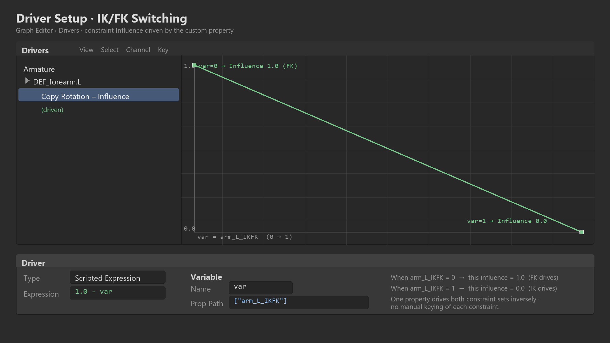
IK/FK Switching and Snapping
⚠️ The Snapping Problem
Problem:
- You animate in FK mode (arm_L_IKFK = 0.0)
- Want to switch to IK at frame 50
- Change property to 1.0
- Result: Arm JUMPS to different position!
- Why? IK controls are where you left them last time, not matching current FK pose
Solution: Snap Controls Before Switching
- Frame 50: Currently in FK mode
- Manually position IK controls to match FK pose:
- Move IK_hand.L to exact position of DEF_hand.L
- Rotate IK_hand.L to match DEF_hand.L rotation
- Move IK_elbow_pole.L to make elbow match current elbow position
- Tedious but necessary!
- Keyframe IK controls at frame 50
- Frame 51: Switch property to IK
- Change arm_L_IKFK from 0.0 to 1.0
- Keyframe the property
- Arm stays in same position (no pop!)
- Continue animating in IK from frame 51+
Professional Solution: Snap Operators (Addon)
- Rigify addon (included with Blender) has auto-snap buttons
- Click "Snap FK to IK" button → FK controls jump to match IK instantly
- Click "Snap IK to FK" button → IK controls jump to match FK instantly
- Manual snapping is tedious; addons make it one-click
- Advanced riggers write Python scripts for custom snap buttons
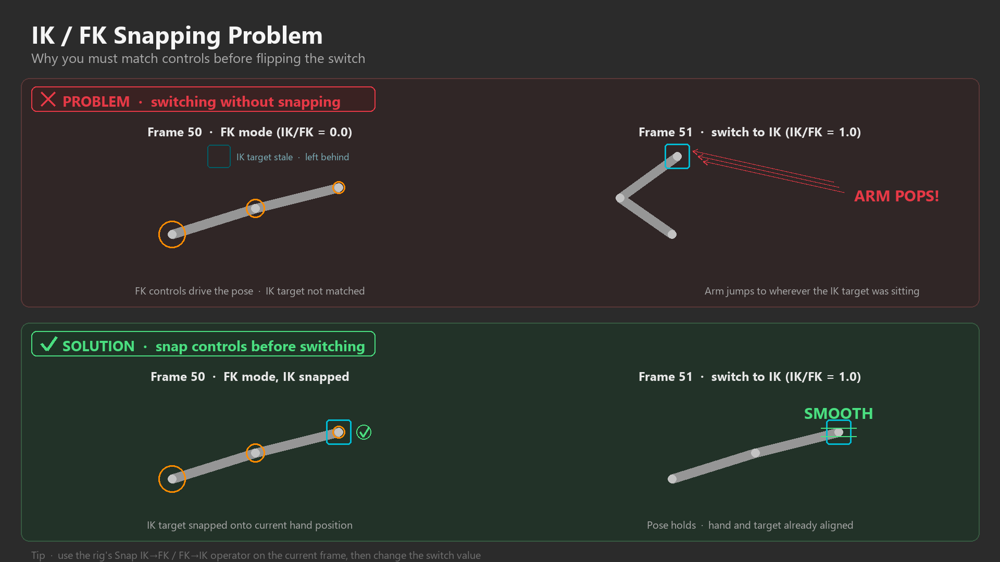
Testing the Complete Arm Rig
✅ Verification Checklist
FK Mode Test (arm_L_IKFK = 0.0):
- ✓ Rotate FK_upper_arm.L → whole arm moves naturally
- ✓ Rotate FK_forearm.L → forearm and hand rotate
- ✓ Rotate FK_hand.L → only hand rotates
- ✓ FK controls are visible and easy to select
- ✓ IK controls don't affect arm (influence 0.0)
IK Mode Test (arm_L_IKFK = 1.0):
- ✓ Move IK_hand.L → arm reaches toward hand
- ✓ Move IK_elbow_pole.L → elbow direction changes
- ✓ Stretch arm fully → reaches maximum extension (no flipping)
- ✓ Move hand behind body → elbow bends correctly
- ✓ FK controls don't affect arm (influence 0.0)
Blend Mode Test (arm_L_IKFK = 0.5):
- ✓ Both FK and IK partially control arm (50/50 mix)
- ✓ Useful for specific situations (rare but possible)
Mesh Deformation Test:
- ✓ Arm mesh follows DEF bones smoothly in both modes
- ✓ No pinching or strange deformation
- ✓ Elbow bends naturally (good weight painting)
- ✓ Shoulder deforms properly when arm moves
🎓 Professional Arm Rig Complete! You've just built what many 3D artists consider the most complex part of character rigging. An arm rig with proper IK/FK switching is the foundation of all limb rigging—the same principles apply to legs, tails, tentacles, wings, anything with joints. Master the arm rig, and you've mastered 80% of character rigging! The organization (DEF/MCH/CTRL layers), the constraint setup, and the switching system are industry-standard techniques used in every major animation studio.
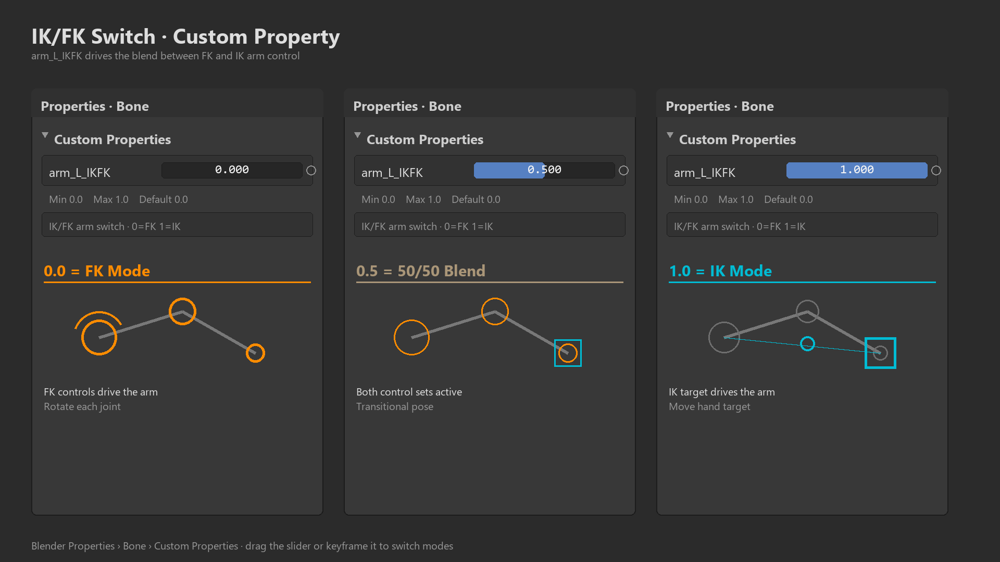
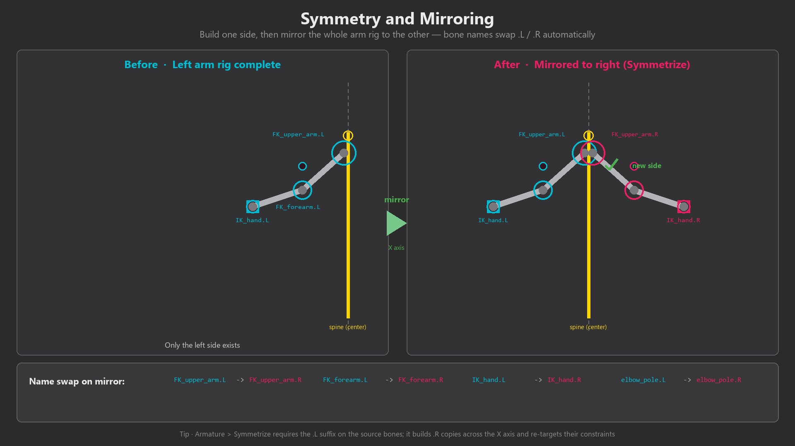
🎯 Arm Rig Summary
- Five-layer system: DEF (deform), FK controls, IK controls, MCH (mechanism), switch property
- FK chain: Shoulder → Elbow → Wrist, parented hierarchy, circle controls
- IK system: Hand target + pole target, IK constraint on MCH bones
- DEF bones driven by: Copy Rotation constraints (both FK and IK)
- Switch property: Custom property drives constraint influences (0=FK, 1=IK)
- Snapping required: Match controls before switching modes to prevent pops
- Testing critical: Verify both modes work independently and smoothly
- Mirror for right side: Repeat process for arm.R with same structure
Arm rigging complete! Leg rigging uses same principles!
🦵 Rigging Legs with IK/FK
Leg rigs are similar to arm rigs in structure, but they have unique requirements—feet need to plant firmly on the ground, heels pivot, toes bend, and the entire leg supports the character's weight. While arms primarily swing freely (FK dominant), legs primarily plant and step (IK dominant). Let's build a professional leg rig with advanced foot controls that give animators precise control over every aspect of locomotion!
Leg Rig Components
🏗️ Complete Leg Rig Architecture
A professional leg rig includes:
1. Deformation Bones (DEF Layer)
- DEF_thigh.L - Hip to knee (weighted to mesh)
- DEF_shin.L - Knee to ankle (weighted to mesh)
- DEF_foot.L - Ankle to ball of foot (weighted to mesh)
- DEF_toe.L - Ball to tip of toes (weighted to mesh)
- These deform the leg mesh
2. FK Control Bones (CTRL Layer)
- FK_thigh.L - Circle control at hip
- FK_shin.L - Circle control at knee
- FK_foot.L - Circle control at ankle
- FK_toe.L - Small circle at ball of foot
- Parented chain for FK animation (swinging leg)
3. IK Control Bones (CTRL Layer)
- IK_foot.L - Foot-shaped control (main foot control)
- IK_knee_pole.L - Small sphere in front of knee
- IK_heel_pivot.L - Pivot point at heel (for foot roll)
- IK_toe_pivot.L - Pivot point at ball of foot (for toe bend)
- Complex hierarchy for realistic foot motion
4. Mechanism Bones (MCH Layer)
- MCH_IK_thigh.L - Driven by IK constraint
- MCH_IK_shin.L - Driven by IK constraint
- These calculate IK solution for leg
5. Switch Property
- Custom property: "leg_IK_FK.L" (0.0 to 1.0)
- Same principle as arm rig
Thigh/Shin] E --> F[DEF Bones
Deform Mesh] G[FK Controls] -.influence 0-1.-> F H[Knee Pole] -.controls.-> E style A fill:#4CAF50,stroke:#333,stroke-width:2px,color:#fff style F fill:#3a3a3a,stroke:#333,stroke-width:2px,color:#fff
Understanding Foot Controls
💡 Why Leg Rigs Are More Complex
The Foot Challenge:
- Multiple pivot points: Heel, ball, toe tip all rotate independently
- Foot roll: Walk cycle requires smooth heel-to-toe rolling motion
- Toe bend: Toes bend when pushing off ground
- Planting: Foot must stay locked to ground while body moves
- Complex hierarchy needed: Can't use simple IK like hand
Professional Foot Control Hierarchy:
- IK_foot.L (master control):
- What animator moves to position foot
- Parents entire foot control system
- Large, foot-shaped for easy selection
- IK_heel_pivot.L (child of IK_foot):
- Pivot point at heel
- Rotating this tips foot back (heel down, toes up)
- Used for heel plant in walk cycle
- IK_toe_pivot.L (child of heel pivot):
- Pivot point at ball of foot
- Rotating this tips foot forward (toes down, heel up)
- Used for toe push-off in walk cycle
- IK_leg_target (child of toe pivot):
- Actual IK target for shin bone
- Hidden from animator (mechanism layer)
- Positioned at ankle
How This Hierarchy Works:
- Move IK_foot.L → entire foot moves (simple positioning)
- Rotate IK_heel_pivot.L → foot tips on heel (heel-down pose)
- Rotate IK_toe_pivot.L → foot tips on ball (toe push-off)
- All rotations combined → smooth foot roll animation!
Step-by-Step: Building the Leg Rig
✅ Phase 1: Setup Deformation Bones
- Rename deformation bones:
- thigh.L → "DEF_thigh.L"
- shin.L → "DEF_shin.L"
- foot.L → "DEF_foot.L"
- toe.L → "DEF_toe.L" (if present)
- Verify bone chain:
- DEF_thigh.L → DEF_shin.L → DEF_foot.L → DEF_toe.L
- All connected in parent-child hierarchy
- DEF_thigh.L parents to pelvis/hip bone
- Organize to hidden layer:
- Move all DEF bones to layer 31
- Lock transforms (prevent direct manipulation)
💡 Phase 2: Create FK Control Chain
- Duplicate DEF bones for FK:
- Edit Mode, select all DEF leg bones
Shift+D,Enter- Rename to FK_thigh.L, FK_shin.L, FK_foot.L, FK_toe.L
- Clear and re-parent FK chain:
- Select all FK bones,
Alt+P> Clear Parent (Keep Transform) - Re-parent properly: toe → foot → shin → thigh
- Parent FK_thigh.L to pelvis/hip
- Select all FK bones,
- Add custom shapes:
- FK_thigh.L: Large circle
- FK_shin.L: Medium circle
- FK_foot.L: Small circle
- FK_toe.L: Tiny circle
- Decreasing size down chain
- Organize:
- Layer 1, bone group "Left_FK" (blue)
✅ Phase 3: Create IK System with Foot Controls
This is the complex part—foot pivot hierarchy!
- Create mechanism IK bones:
- Edit Mode, duplicate DEF_thigh.L and DEF_shin.L
- Rename to MCH_IK_thigh.L, MCH_IK_shin.L
- Clear parents
- Re-parent: MCH_IK_shin.L → MCH_IK_thigh.L
- Create IK leg target (hidden mechanism bone):
- Duplicate DEF_foot.L
- Rename to "MCH_IK_leg_target.L"
- Clear parent
- Position at ankle (end of shin bone)
- This will be the actual IK target
- Create knee pole target:
Shift+A> Single Bone- Position in front of knee (about shin-length forward)
- Rename to "IK_knee_pole.L"
- Scale small (
S 0.3) - Clear parent (independent control)
- Create toe pivot bone:
- Add Single Bone
- Position at ball of foot (where toes bend)
- Rename to "IK_toe_pivot.L"
- Orient bone to point forward along foot
- Clear parent for now
- Create heel pivot bone:
- Add Single Bone
- Position at heel (back of foot)
- Rename to "IK_heel_pivot.L"
- Orient bone to match foot direction
- Clear parent for now
- Create main foot control:
- Add Single Bone
- Position at center/ankle of foot
- Rename to "IK_foot.L"
- Scale larger (this is main control animator grabs)
- Clear parent (independent control)
- Setup foot control hierarchy (CRITICAL!):
- Select MCH_IK_leg_target.L, Shift-select IK_toe_pivot.L
Ctrl+P> Keep Offset (target parents to toe pivot)- Select IK_toe_pivot.L, Shift-select IK_heel_pivot.L
Ctrl+P> Keep Offset (toe pivot parents to heel pivot)- Select IK_heel_pivot.L, Shift-select IK_foot.L
Ctrl+P> Keep Offset (heel pivot parents to foot control)- Final hierarchy: IK_foot → heel_pivot → toe_pivot → leg_target
- Add IK constraint:
- Pose Mode, select MCH_IK_shin.L
- Add Constraint > Inverse Kinematics
- Target: Armature, Bone: MCH_IK_leg_target.L
- Chain Length: 2 (thigh + shin)
- Pole Target: Armature, Bone: IK_knee_pole.L
- Pole Angle: Adjust (try 0°, 90°, -90° until knee points correctly)
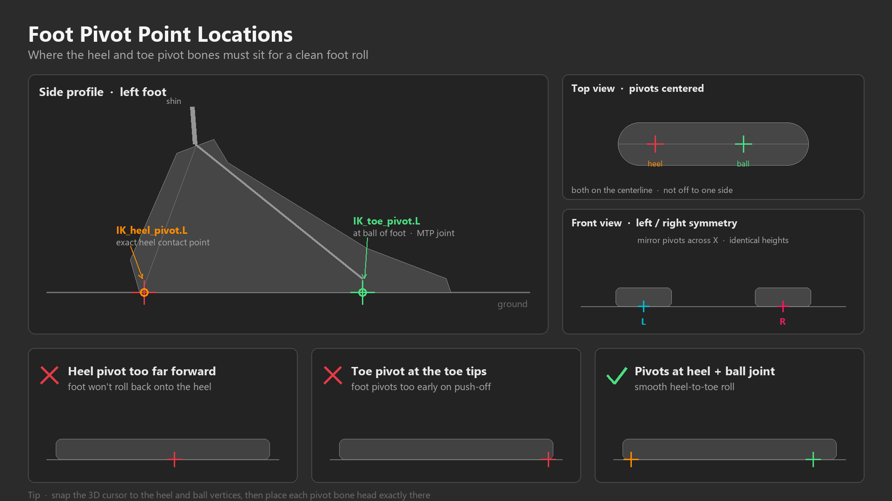
💡 Phase 4: Add Custom Shapes and Organization
- IK_foot.L shape:
- Create foot-shaped mesh (rectangle scaled to foot proportions)
- Or use cube scaled flat and long
- Assign as custom shape
- Make it LARGE (easy to select, main control)
- IK_knee_pole.L shape:
- Small sphere or diamond
- Should be visible but not overwhelming
- Pivot bones (optional):
- Can add small custom shapes to heel/toe pivots
- Or hide them entirely (animator uses foot control only)
- Professional choice: Small arrow shapes to show pivot direction
- Organize layers:
- IK_foot.L, IK_knee_pole.L: Layer 1 (main controls)
- Pivot bones: Layer 2 (secondary controls) or hidden
- MCH bones: Layer 30 (hidden mechanism)
- Bone groups:
- IK controls: "Left_IK" (cyan color)
✅ Phase 5: Connect to Deformation Bones
- DEF bones get Copy Rotation from FK:
- DEF_thigh.L: Copy Rotation from FK_thigh.L (influence 1.0)
- DEF_shin.L: Copy Rotation from FK_shin.L (influence 1.0)
- DEF_foot.L: Copy Rotation from FK_foot.L (influence 1.0)
- DEF_toe.L: Copy Rotation from FK_toe.L (influence 1.0)
- DEF bones get Copy Rotation from IK:
- DEF_thigh.L: Add second Copy Rotation from MCH_IK_thigh.L (influence 0.0)
- DEF_shin.L: Add second Copy Rotation from MCH_IK_shin.L (influence 0.0)
- DEF_foot.L: Add second Copy Rotation from MCH_IK_leg_target.L (influence 0.0)
- DEF_toe.L: Add second Copy Rotation from IK_toe_pivot.L (influence 0.0)
- Create switch property:
- Custom property on armature: "leg_L_IKFK"
- Min 0.0, Max 1.0, Default 0.0
- Drive constraint influences:
- FK constraints: Expression
1.0 - var(inverse) - IK constraints: Expression
var(direct) - All driven by "leg_L_IKFK" property
- FK constraints: Expression
Advanced Foot Features
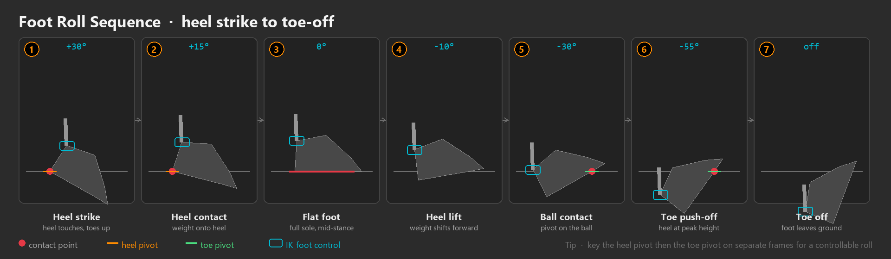
🦶 Foot Roll and Toe Bend Controls
Using the Foot Control System:
1. Basic Foot Positioning:
- Move IK_foot.L (
Gto grab) - Entire leg follows, foot plants where positioned
- This is 90% of leg animation
2. Foot Roll (Heel to Toe):
- Heel down, toes up:
- Select IK_heel_pivot.L
- Rotate on Y-axis (or whichever axis tips foot backward)
- Foot pivots on heel
- Used at beginning of walk cycle contact
- Toes down, heel up:
- Select IK_toe_pivot.L
- Rotate on Y-axis (tips foot forward)
- Foot pivots on ball
- Used for push-off in walk cycle
- Smooth roll animation:
- Start: Heel pivot rotated back (heel contact)
- Mid: Both pivots neutral (flat foot)
- End: Toe pivot rotated forward (push-off)
- Creates natural foot roll motion!
3. Advanced: Rock Side to Side (Optional):
- Some rigs add side pivot bones (inside/outside of foot)
- Allows foot to rock left/right (weight shift)
- Professional feature but more complex to setup
- Not essential for most character rigs
⚠️ Common Leg Rig Problems
Problem: Foot Rotates When Moving IK_foot.L
- Cause: Foot control hierarchy wrong (foot should parent pivots, not be child)
- Fix: Verify hierarchy: IK_foot → heel_pivot → toe_pivot → leg_target
Problem: Knee Flips When Leg Straightens
- Cause: Pole target missing or positioned wrong
- Fix: Add knee pole target in front of leg, adjust pole angle
Problem: Foot Roll Doesn't Work (Pivots Don't Rotate Foot)
- Cause: Pivot bones positioned wrong (not at actual pivot points)
- Fix: Heel pivot must be AT heel, toe pivot AT ball of foot (exact location matters!)
Problem: Leg Deformation Looks Wrong
- Cause: Weight painting issue, not rig issue
- Fix: Return to Weight Paint Mode, refine knee and hip weights
Problem: Toes Don't Bend
- Cause: DEF_toe.L not copying rotation from pivot or FK control
- Fix: Add Copy Rotation constraint to DEF_toe.L from appropriate source
Testing the Complete Leg Rig
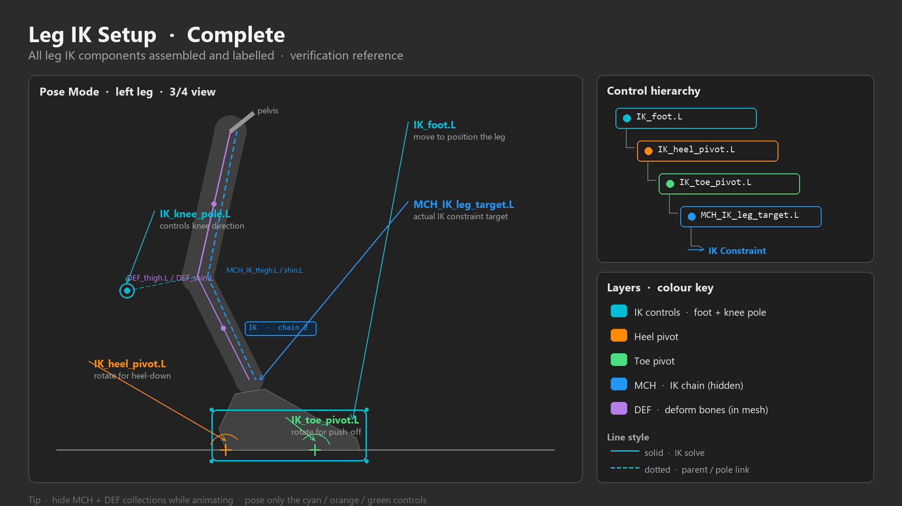
✅ Verification Checklist
FK Mode Test (leg_L_IKFK = 0.0):
- ✓ Rotate FK_thigh.L → leg swings from hip
- ✓ Rotate FK_shin.L → lower leg and foot rotate
- ✓ Rotate FK_foot.L → foot tilts at ankle
- ✓ Rotate FK_toe.L → toes bend
- ✓ Natural swinging motion (for FK leg animation)
IK Mode Test (leg_L_IKFK = 1.0):
- ✓ Move IK_foot.L → leg reaches toward foot position
- ✓ Move IK_knee_pole.L → knee direction changes
- ✓ Rotate IK_heel_pivot.L → foot tips on heel
- ✓ Rotate IK_toe_pivot.L → foot tips on ball
- ✓ Combined heel/toe rotation → smooth foot roll
- ✓ Foot stays planted when moving body (IK planting works!)
Walk Cycle Test:
- ✓ Foot plants on ground (IK_foot.L positioned)
- ✓ Heel contact (IK_heel_pivot.L rotated back)
- ✓ Flat foot (pivots neutral)
- ✓ Toe push-off (IK_toe_pivot.L rotated forward)
- ✓ Foot lifts (IK_foot.L moves up and forward)
- ✓ Leg swings (body moves, foot stays planted via IK)
Mesh Deformation Test:
- ✓ Leg mesh follows smoothly in both FK and IK
- ✓ Knee bends naturally (no pinching)
- ✓ Hip/buttock deformation looks natural
- ✓ Ankle and foot deform properly
- ✓ Toes bend when toe pivot rotates
🎉 Professional Leg Rig Complete! Leg rigging with proper foot controls is considered one of the most challenging aspects of character rigging. The foot pivot hierarchy you just built is used in every professional animation studio—from Pixar to game studios. The ability to create smooth foot rolls, plant feet firmly, and switch between IK and FK gives animators the tools they need to create believable locomotion. Master this leg rig, and you can tackle any limb rigging challenge!
🎯 Leg Rig Summary
- Complex foot hierarchy: IK_foot → heel_pivot → toe_pivot → leg_target
- Foot roll capability: Heel and toe pivots create natural walking motion
- IK dominant: Legs primarily use IK (planting), FK for swinging/relaxed poses
- Knee pole target: Essential for preventing knee flipping
- Same FK/IK switching: Uses identical system as arm rig
- Pivot positioning critical: Must be at exact heel/ball locations
- Walk cycle ready: Rig supports full locomotion animation
- Mirror for right leg: Repeat process for leg.R with same structure
Leg rigging complete! Next: Spine and torso controls!
🎯 Spine and Torso Controls
The spine is the backbone of character animation—literally! It connects upper and lower body, allows the character to bend and twist, and determines posture and personality. Unlike limbs (which have clear FK/IK systems), spine rigs vary widely based on animation needs. A simple rig might have 2-3 spine controls, while a complex rig could have 10+. Let's build a versatile spine rig that gives animators intuitive control over the torso!
Spine Rig Design Approaches
🏗️ Common Spine Rig Architectures
1. Simple FK Spine (Beginner-Friendly)
- 3-5 FK control bones along spine
- Each bone rotates independently
- Pros: Simple setup, direct control, predictable
- Cons: Requires keyframing every spine segment individually
- Best for: Simple characters, beginners, quick rigs
2. COG + Chest System (Most Common)
- COG (Center of Gravity) control at hips - moves everything
- Chest control at upper torso - rotates upper body
- Spine bones between automatically interpolate
- Pros: Two controls do most work, animator-friendly
- Cons: Less control over individual spine segments
- Best for: Most bipedal characters, production rigs
3. IK Spine with Spline Control (Advanced)
- Spine follows a curve (spline IK)
- Controls at root, mid, and chest
- Smooth, curving spine motion
- Pros: Natural bending, fewer controls needed
- Cons: Complex setup, can be unpredictable
- Best for: Creatures, snakes, flexible characters
4. Hybrid FK/IK Spine (Professional)
- Main controls (COG, chest) with underlying FK spine
- Animator can use simple controls OR detailed FK
- Switch between automation and manual control
- Pros: Maximum flexibility, professional quality
- Cons: Most complex to setup
- Best for: Feature film rigs, advanced animators
We'll Build: COG + Chest System (Industry Standard)
Ground Level] --> B[COG Control
Hip Level] B --> C[Spine Controls
Lower/Mid/Upper] C --> D[Chest Control
Upper Torso] D --> E[Neck/Head
Controls] B -.controls.-> F[Legs
Parent to COG] D -.controls.-> G[Arms
Parent to Chest] style A fill:#4CAF50,stroke:#333,stroke-width:2px,color:#fff style B fill:#3a3a3a,stroke:#333,stroke-width:2px,color:#fff style D fill:#3a3a3a,stroke:#333,stroke-width:2px,color:#fff
COG + Chest Spine Rig Components
💡 Professional Spine Rig Anatomy
Deformation Bones (DEF Layer):
- DEF_pelvis - Hip bone (weighted to hip area)
- DEF_spine_01 - Lower spine (weighted to lower back)
- DEF_spine_02 - Mid spine (weighted to mid back)
- DEF_spine_03 - Upper spine (weighted to upper back)
- DEF_chest - Chest bone (weighted to chest/shoulders)
- These deform the torso mesh
Control Bones (CTRL Layer):
- Root control: Ground-level master control (moves entire rig)
- COG control: At hips, controls lower body and whole spine
- Chest control: At upper torso, controls upper body
- Optional torso control: Mid-spine for additional bending control
How It Works:
- Root: Move character around scene (position in world)
- COG: Body posture (lean forward/back, weight shift)
- Legs parent to COG (move with hips)
- Entire spine follows COG
- Chest: Upper body rotation (twist torso, lean shoulders)
- Arms parent to chest (move with upper body)
- Neck/head parent to chest
- Spine bones: Automatically interpolate between COG and chest
- Create smooth curve from hips to chest
- Usually 2-4 spine bones between COG and chest
Step-by-Step: Building COG + Chest Spine
✅ Phase 1: Setup Deformation Spine
- Verify spine bone chain:
- Check existing spine bones (from Lesson 37)
- Should have: pelvis → spine_01 → spine_02 → spine_03 → chest
- All connected in hierarchy
- Rename to DEF convention:
- Edit Mode, rename all spine bones with DEF_ prefix
- DEF_pelvis, DEF_spine_01, DEF_spine_02, DEF_spine_03, DEF_chest
- Adjust spine bone count (if needed):
- Minimum: 3 spine bones (lower, mid, upper)
- Recommended: 4-5 spine bones for smooth bending
- Too many: Overcomplicated, diminishing returns
- Too few: Stiff, robotic bending
- Organize:
- Move DEF spine bones to layer 31 (hidden)
- Lock transforms
💡 Phase 2: Create Root Control
- Create root bone:
- Edit Mode,
Shift+A> Single Bone - Position at ground level, centered on character
- Orient vertically (points up along Z-axis)
- Rename to "root"
- Scale large (should encompass character when viewed from top)
- Edit Mode,
- Purpose of root:
- Master parent of entire rig
- Moving root moves everything (character walks through scene)
- Rotating root rotates everything (turn character to face direction)
- Root stays at ground level (doesn't lift with jumps/crouches)
- Add custom shape:
- Create large circle at ground level (or four-arrow shape)
- Biggest control on rig (should be obvious)
- Assign as custom shape to root bone
- Organize:
- Layer 1 (main controls)
- Bone group "Center" (yellow/green color)
✅ Phase 3: Create COG Control
- Create COG bone:
- Edit Mode, duplicate DEF_pelvis
- Rename to "COG" (or "pelvis_control", "hips")
- Clear parent (
Alt+P> Keep Transform) - Position at hip level, center of character
- Parent COG to root:
- Select COG, Shift-select root
Ctrl+P> Keep Offset- COG now moves with root but can also move independently
- Add custom shape:
- Large circle or rounded square at hip level
- Should be prominent (second-most used control after root)
- What COG controls:
- Body posture (lean forward/back, side-to-side)
- Hip position (crouch, stand, weight shift)
- Entire spine follows COG (base of spine)
- Legs parent to COG (move with hips)
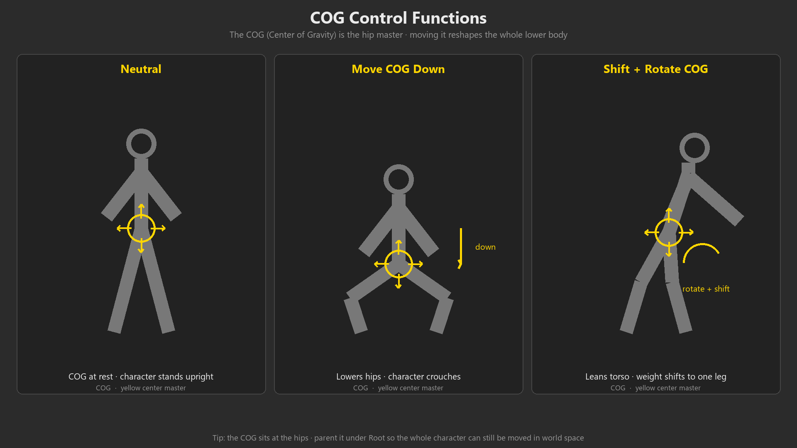
💡 Phase 4: Create Chest Control
- Create chest bone:
- Edit Mode, duplicate DEF_chest
- Rename to "chest_control"
- Clear parent
- Position at upper torso (below shoulders)
- Parent chest to COG:
- Select chest_control, Shift-select COG
Ctrl+P> Keep Offset- Chest follows COG but can rotate independently
- Add custom shape:
- Circle or half-circle at chest level
- Medium size (smaller than COG, larger than spine details)
- What chest controls:
- Upper body rotation (twist torso left/right)
- Chest lean (bend forward/back from waist)
- Shoulders follow chest
- Arms parent to chest
- Neck/head parent to chest
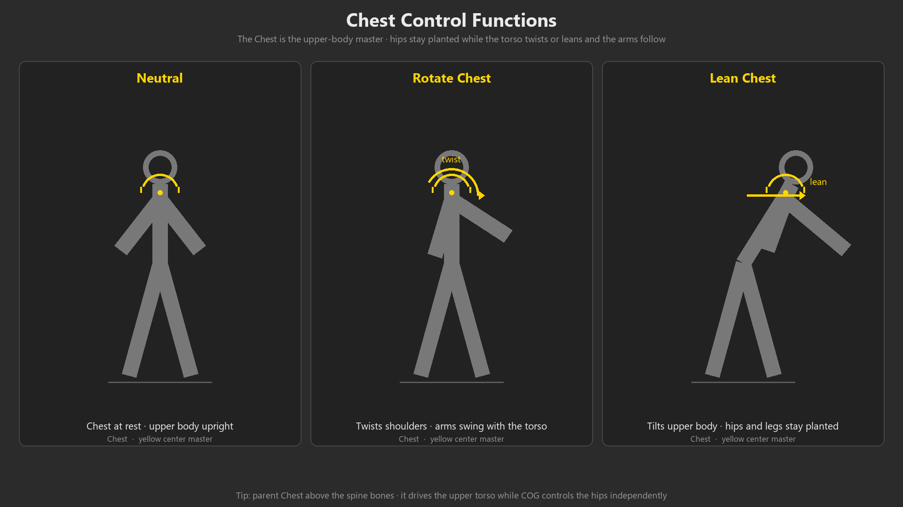
✅ Phase 5: Connect Controls to Spine
Goal: Spine bones interpolate smoothly between COG and chest
- DEF_pelvis follows COG completely:
- Pose Mode, select DEF_pelvis
- Add Constraint > Copy Transforms
- Target: Armature, Bone: COG
- Influence: 1.0
- Pelvis now exactly follows COG (100%)
- DEF_chest follows chest_control completely:
- Select DEF_chest
- Add Constraint > Copy Transforms
- Target: Armature, Bone: chest_control
- Influence: 1.0
- Chest now exactly follows chest control (100%)
- Middle spine bones blend between COG and chest:
- DEF_spine_01 (lowest spine):
- Copy Transforms from COG, influence: 0.75 (75% COG)
- Copy Transforms from chest_control, influence: 0.25 (25% chest)
- Result: Mostly follows hips, slightly influenced by chest
- DEF_spine_02 (mid spine):
- Copy Transforms from COG, influence: 0.50 (50% COG)
- Copy Transforms from chest_control, influence: 0.50 (50% chest)
- Result: Equal blend between hips and chest
- DEF_spine_03 (upper spine):
- Copy Transforms from COG, influence: 0.25 (25% COG)
- Copy Transforms from chest_control, influence: 0.75 (75% chest)
- Result: Mostly follows chest, slightly influenced by hips
- DEF_spine_01 (lowest spine):
- Pattern:
- Bottom of spine: 100% COG → 0% chest
- Middle segments: Gradual blend (75/25 → 50/50 → 25/75)
- Top of spine: 0% COG → 100% chest
- Creates smooth curve when COG and chest move differently!
Parenting Body Parts to Spine
🔗 Connecting Limbs and Head
Leg FK Controls → COG:
- Select FK_thigh.L, Shift-select COG
Ctrl+P> Keep Offset- Repeat for FK_thigh.R
- Result: Legs move when COG moves (hips control legs)
Leg IK Controls → Root (Usually):
- IK foot controls typically parent to root, not COG
- Why? Feet should stay planted when hips move
- Alternative: Parent to COG if you want feet to always move with hips
- Professional rigs often have switch: "foot parents to world" or "foot parents to COG"
Arm FK Controls → Chest:
- Select FK_upper_arm.L, Shift-select chest_control
Ctrl+P> Keep Offset- Repeat for FK_upper_arm.R
- Result: Arms move when chest rotates (shoulders follow torso)
Arm IK Controls → Chest or Root:
- Option A: Parent IK_hand to chest (hands move with upper body)
- Option B: Parent IK_hand to root (hands stay in world space)
- Choice depends on animation needs (both valid)
- Professional: Switchable parenting via constraint
Neck/Head → Chest:
- Neck base bone parents to chest_control
- Head follows upper body naturally
- We'll cover detailed head/neck controls separately
Testing the Spine Rig
✅ Verification Tests
Root Control Test:
- ✓ Move root → entire character moves in world space
- ✓ Rotate root → character turns (all parts together)
- ✓ Root is largest control, easy to select
COG Control Test:
- ✓ Move COG up/down → character crouches/stands
- ✓ Move COG forward/back → body weight shifts
- ✓ Rotate COG → entire spine leans/tilts
- ✓ Legs follow COG movement (FK legs)
- ✓ Feet stay planted (IK feet parented to root)
Chest Control Test:
- ✓ Rotate chest left/right → upper body twists
- ✓ Rotate chest forward/back → chest leans
- ✓ Arms follow chest rotation (FK arms)
- ✓ Spine curves smoothly between COG and chest
- ✓ Lower spine mostly follows COG, upper mostly follows chest
Combined Motion Test:
- ✓ Rotate COG forward (lean hips) + rotate chest back (arch back) = backbend pose
- ✓ Rotate COG left + rotate chest right = contrapposto/S-curve pose
- ✓ Spine curves naturally between controls (smooth interpolation)
Mesh Deformation Test:
- ✓ Torso bends smoothly (no sudden breaks)
- ✓ Hip area deforms naturally when COG moves
- ✓ Chest/shoulder area deforms naturally when chest rotates
- ✓ Side-bending looks natural (not pinching)
💭 Spine Rigging Philosophy: The spine is where you balance simplicity and control. Too few controls, and animators can't achieve the poses they want. Too many controls, and animation becomes tedious (keyframing 10 spine bones for every pose?). The COG + chest system hits the sweet spot—two main controls handle 90% of spine animation, while maintaining smooth, natural bending. Professional animators love this approach because it's intuitive: "Move the hips or move the chest"—simple mental model, powerful results!
🎯 Spine Rig Summary
- Three-control system: Root (world movement), COG (hips/posture), Chest (upper body)
- Root control: Master parent, ground level, moves entire rig through scene
- COG control: Hip level, controls lower body and overall posture
- Chest control: Upper torso, controls shoulders and upper body twist
- Spine interpolation: Middle spine bones blend between COG and chest (gradual influence)
- Parenting structure: Root → COG → chest → neck/head, legs to COG, arms to chest
- Two controls = most spine motion: Simple for animators, powerful results
- Optional mid-control: Add torso control for extreme bending if needed
Core rig complete! Time for the hands-on project!
🎨 Hands-On Project: Complete Biped Character Rig
Time to put everything together! You'll take your weighted character from Lesson 38 and transform it into a fully-featured, production-ready biped rig with IK/FK arms and legs, spine controls, and custom shapes. This is your capstone rigging project—by the end, you'll have a rig that rivals professional studio work. Let's build something amazing!
🎯 Project Overview
Goal: Build a complete biped character rig from scratch
Time Required: 3-5 hours (take breaks!)
Skills Applied:
- Custom control bone creation and shaping
- IK/FK arm rigging with switching
- IK/FK leg rigging with foot controls
- COG + Chest spine system
- Bone constraints (Copy Rotation, IK, Track To)
- Rig organization (layers, groups, hierarchy)
Result: Professional-quality character rig ready for animation!
Project Phases
📋 Build Order (Follow This Sequence)
- Phase 1: Preparation (15 minutes)
- Organize deformation bones with DEF_ prefix
- Create custom shape library
- Setup bone layers and groups
- Phase 2: Spine Rig (30 minutes)
- Create root, COG, and chest controls
- Connect spine with blending constraints
- Test spine bending
- Phase 3: Left Arm Rig (45 minutes)
- Build FK arm chain
- Build IK arm system
- Add IK/FK switching
- Test thoroughly before mirroring
- Phase 4: Right Arm Rig (30 minutes)
- Mirror left arm rig to right side
- Adjust constraints and targets
- Test right arm
- Phase 5: Left Leg Rig (60 minutes)
- Build FK leg chain
- Build IK leg system with foot controls
- Add IK/FK switching
- Test foot roll and planting
- Phase 6: Right Leg Rig (30 minutes)
- Mirror left leg rig to right side
- Adjust constraints and foot hierarchy
- Test right leg
- Phase 7: Polish and Test (30 minutes)
- Add custom shapes to all controls
- Color-code bone groups
- Organize layers
- Full rig testing in various poses
Why This Order?
- Spine first: Everything else parents to spine controls
- One side at a time: Perfect one arm/leg, then mirror
- Test before mirroring: Easier to fix issues on one side
- Polish last: Focus on functionality first, aesthetics after
Phase 1: Preparation
✅ Setup and Organization
Step 1: Rename Deformation Bones
- Edit Mode, select all armature bones
- Rename systematically:
- Spine: pelvis → DEF_pelvis, spine_01 → DEF_spine_01, etc.
- Left arm: upper_arm.L → DEF_upper_arm.L, forearm.L → DEF_forearm.L, hand.L → DEF_hand.L
- Right arm: upper_arm.R → DEF_upper_arm.R, etc.
- Left leg: thigh.L → DEF_thigh.L, shin.L → DEF_shin.L, foot.L → DEF_foot.L, toe.L → DEF_toe.L
- Right leg: Same pattern with .R suffix
- Head/neck: neck → DEF_neck, head → DEF_head
- Result: All deformation bones clearly labeled with DEF_ prefix
Step 2: Create Custom Shape Library
- Object Mode, create collection "Widgets"
- Create basic shapes:
- SHAPE_circle_large (radius 1.5): For root, COG
- SHAPE_circle_medium (radius 1.0): For chest, shoulders
- SHAPE_circle_small (radius 0.5): For FK joints, elbows
- SHAPE_hand: Flat cube shaped like hand
- SHAPE_foot: Flat cube shaped like foot
- SHAPE_sphere_small (UV sphere, 8 segments): For pole targets
- Move all shapes to "Widgets" collection
- Hide collection from viewport (eye icon off)
Step 3: Setup Bone Layers
- Plan layer organization:
- Layer 1: Main controls (root, COG, chest, IK hands/feet)
- Layer 2: Secondary controls (FK chains, pole targets)
- Layer 3: Face controls (future)
- Layer 30: Mechanism bones (MCH_)
- Layer 31: Deformation bones (DEF_)
- Move DEF bones to layer 31 now (hide from animator)
Step 4: Create Bone Groups
- Properties > Armature > Bone Groups
- Create groups:
- "Center" - Yellow/Green (root, COG, chest, spine)
- "Left_IK" - Cyan (left IK controls)
- "Left_FK" - Blue (left FK controls)
- "Right_IK" - Magenta (right IK controls)
- "Right_FK" - Red (right FK controls)
- Assign bones to groups as you create controls
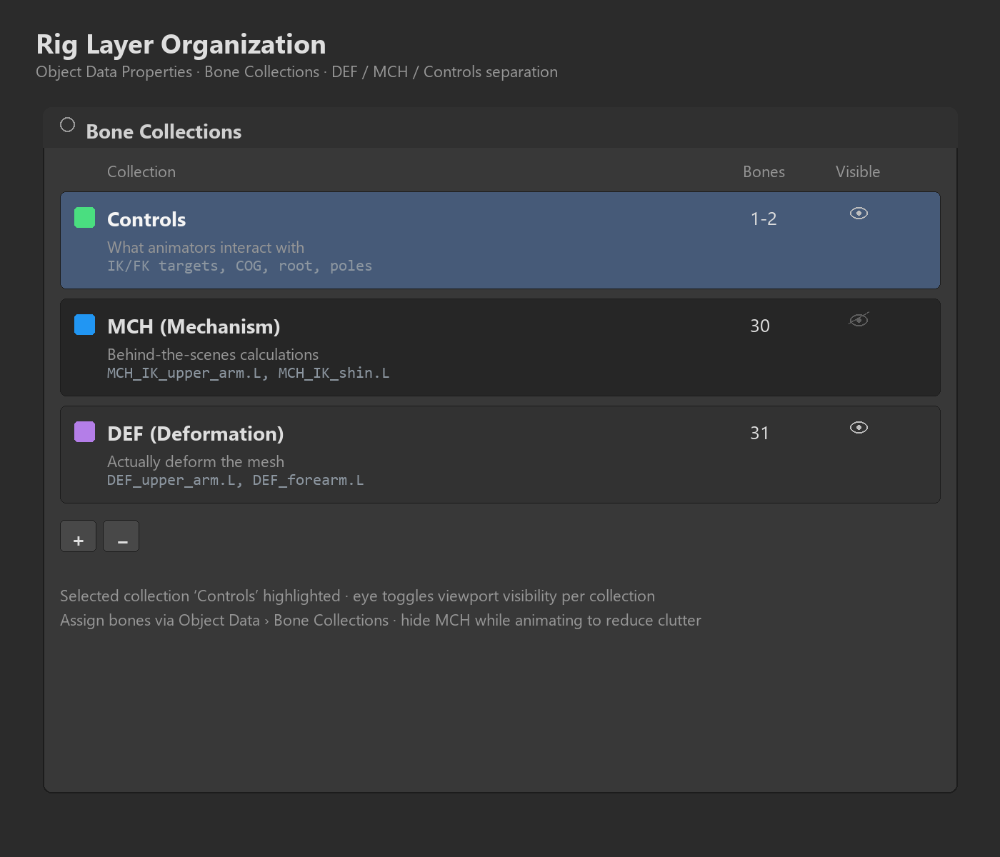
Phase 2-6: Building the Rig
💡 Follow the Lesson Instructions
For each rigging phase, follow the detailed instructions from earlier in this lesson:
- Phase 2 (Spine): See section "Spine and Torso Controls" above
- Create root, COG, chest controls
- Setup spine blending with Copy Transforms
- Test spine bending before continuing
- Phase 3 (Left Arm): See section "Rigging Arms with IK/FK" above
- Complete all 5 phases for left arm
- Test FK mode, IK mode, and switching
- Don't proceed until left arm works perfectly
- Phase 4 (Right Arm): Mirror left arm
- Edit Mode: Select all left arm controls (FK, IK, MCH)
- Armature > Symmetrize or duplicate and mirror manually
- Update constraint targets to .R bones
- Update switch property to "arm_R_IKFK"
- Phase 5 (Left Leg): See section "Rigging Legs with IK/FK" above
- Complete all 5 phases for left leg
- Setup foot roll hierarchy carefully
- Test foot planting and roll before continuing
- Phase 6 (Right Leg): Mirror left leg
- Mirror all leg controls and foot hierarchy
- Update constraint targets to .R bones
- Update switch property to "leg_R_IKFK"
Pro Tip: Save frequently! Save after completing each phase. If something breaks, you can reload and try again without losing hours of work.
Phase 7: Polish and Testing
✅ Final Polish Checklist
Custom Shapes (if not done already):
- ✓ Root: Large circle (biggest control)
- ✓ COG: Large rounded square at hips
- ✓ Chest: Medium circle at chest
- ✓ IK_hand.L/R: Hand-shaped controls
- ✓ IK_foot.L/R: Foot-shaped controls
- ✓ FK controls: Circles (decreasing size down chain)
- ✓ Pole targets: Small spheres
- ✓ All shapes assigned, all controls visible
Bone Groups and Colors:
- ✓ Center controls: Yellow/green (root, COG, chest)
- ✓ Left IK: Cyan (IK_hand.L, IK_foot.L, poles)
- ✓ Left FK: Blue (FK arms and legs)
- ✓ Right IK: Magenta (IK_hand.R, IK_foot.R, poles)
- ✓ Right FK: Red (FK arms and legs)
- ✓ All controls color-coded for easy identification
Layer Organization:
- ✓ Layer 1: Main controls visible (root, COG, chest, IK hands/feet)
- ✓ Layer 2: Secondary controls (FK chains, poles) - toggle as needed
- ✓ Layer 30: MCH bones hidden
- ✓ Layer 31: DEF bones hidden
- ✓ Clean viewport showing only animator controls
Control Naming:
- ✓ All controls have clear names (FK_upper_arm.L, IK_foot.R, etc.)
- ✓ .L and .R suffixes for symmetry
- ✓ Consistent naming convention throughout
Switch Properties:
- ✓ arm_L_IKFK property (0.0 to 1.0)
- ✓ arm_R_IKFK property (0.0 to 1.0)
- ✓ leg_L_IKFK property (0.0 to 1.0)
- ✓ leg_R_IKFK property (0.0 to 1.0)
- ✓ All properties have clear descriptions
- ✓ Drivers connected correctly to constraint influences
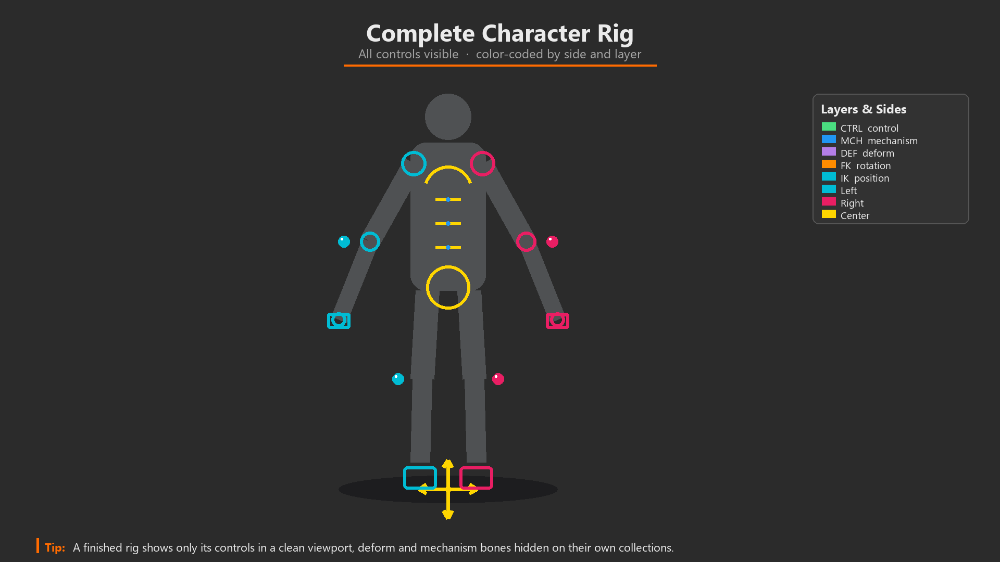
Comprehensive Rig Testing
💡 Full Rig Test Suite
Test 1: Spine System
- Move root → Everything moves
- Move COG → Body crouches/stands, legs follow
- Rotate COG → Spine leans
- Rotate chest → Upper body twists, arms follow
- Combine COG and chest rotations → Spine curves smoothly
Test 2: Arms (Both Sides)
- FK Mode (IKFK = 0.0):
- Rotate shoulder → Arm swings
- Rotate elbow → Forearm bends
- Rotate wrist → Hand rotates
- Natural arcing motion
- IK Mode (IKFK = 1.0):
- Move hand → Arm reaches
- Move pole → Elbow direction changes
- No flipping when arm extends
- Hand stays where positioned
- Switching:
- Change property 0.0 → 1.0 (FK → IK)
- After snapping controls, no popping
Test 3: Legs (Both Sides)
- FK Mode (IKFK = 0.0):
- Rotate hip → Leg swings
- Rotate knee → Lower leg bends
- Rotate ankle → Foot rotates
- IK Mode (IKFK = 1.0):
- Move foot → Leg reaches
- Move knee pole → Knee direction changes
- Rotate heel pivot → Foot tips on heel
- Rotate toe pivot → Foot tips on ball
- Foot stays planted when body moves
- Foot Roll:
- Animate heel pivot → toe pivot for smooth roll
- Natural walking motion achievable
Test 4: Common Poses
- Standing neutral: T-pose or A-pose
- Arms overhead: IK hands reach up, elbows bend naturally
- Sitting: Legs IK, feet planted, hips lowered via COG
- Walk pose: One foot forward, one back, arms swinging (FK)
- Action pose: Punch, kick, reaching—test extreme positions
- Contrapposto: Weight on one leg, hip tilted, opposite shoulder raised
Test 5: Mesh Deformation
- All joints bend smoothly (no pinching)
- Shoulders deform naturally when arms raise
- Hips/buttocks deform naturally when legs move
- Spine curves without breaks
- Weight painting looks good in extreme poses
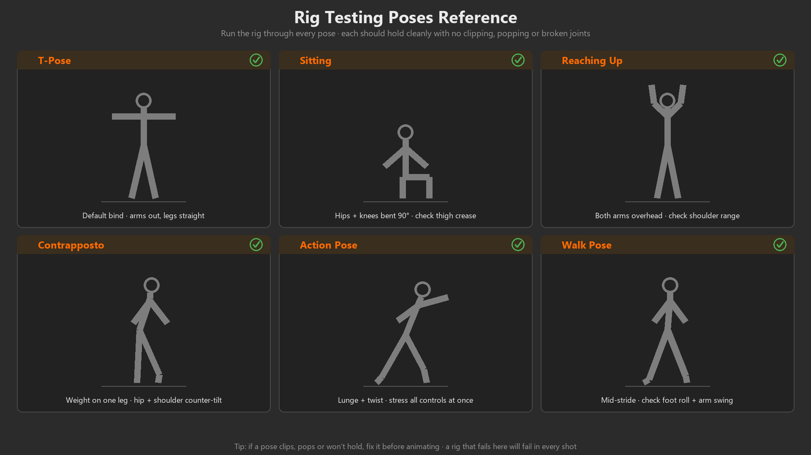
Success Criteria
✅ Your Rig is Complete When:
- ✓ All controls are intuitive and easy to select (custom shapes, color-coded)
- ✓ Root control moves entire rig through world space
- ✓ COG and chest work independently with smooth spine interpolation
- ✓ Arms have working IK/FK with switching on both sides
- ✓ Legs have working IK/FK with foot roll on both sides
- ✓ Feet can plant firmly while body moves (IK planting works)
- ✓ No pole flipping when limbs extend
- ✓ Symmetry works (left and right sides behave identically)
- ✓ All constraints function (Copy Rotation, IK, blending)
- ✓ Mesh deforms naturally in all tested poses
- ✓ Rig is organized (layers, groups, naming all consistent)
- ✓ You can animate a simple walk cycle (ultimate test!)
Bonus Goals:
- Add neck and head controls with eye tracking
- Add finger controls (individual or grouped)
- Create IK/FK snap operators (Python scripting)
- Add advanced features (stretchy IK, bendy bones)
Common Issues and Fixes
⚠️ Troubleshooting Your Rig
Issue: "IK/FK switching causes popping"
- Cause: Controls not snapped before switching
- Fix: Manually position IK controls to match FK (or vice versa) before changing switch property
Issue: "Limb doesn't move in IK mode"
- Check 1: IK constraint target set correctly?
- Check 2: Chain length = 2?
- Check 3: IK constraint influence driven by switch property?
- Check 4: Switch property at 1.0 (IK mode)?
Issue: "Foot roll doesn't work"
- Cause: Foot hierarchy wrong or pivot bones misplaced
- Fix: Verify: IK_foot → heel_pivot → toe_pivot → leg_target
- Fix: Heel pivot must be AT heel, toe pivot AT ball of foot
Issue: "Spine doesn't bend smoothly"
- Cause: Spine blending influences incorrect
- Fix: Verify Copy Transforms influences create gradient from COG to chest
- Pattern: 100/0 → 75/25 → 50/50 → 25/75 → 0/100
Issue: "Mirror didn't work, right side broken"
- Cause: Constraint targets still pointing to .L bones
- Fix: Manually update all constraint targets on .R bones to point to .R targets
- Check: Switch property must be separate for right side (arm_R_IKFK vs arm_L_IKFK)
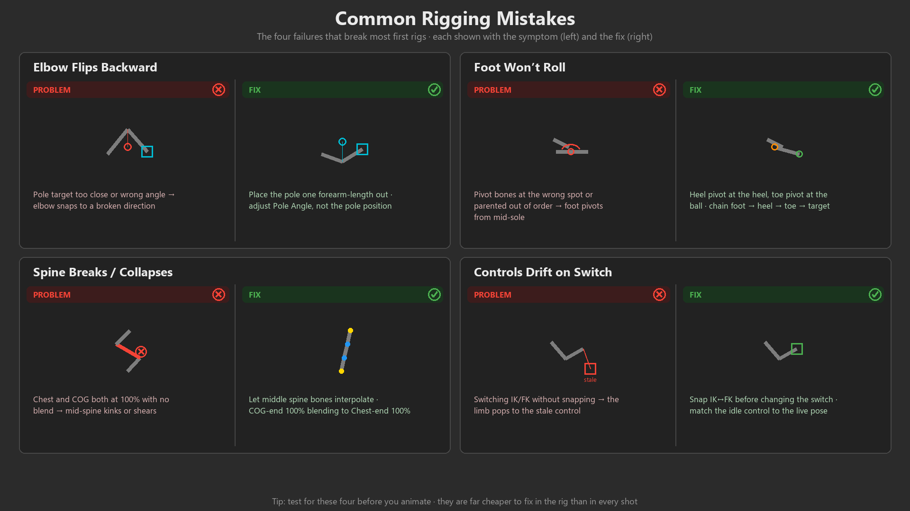
🏆 Congratulations on Building a Professional Character Rig! This is a major milestone in your 3D journey! The rig you've just created uses the same principles and techniques found in rigs from Pixar, Disney, and major game studios. You've learned a skill set that takes many artists years to master. Professional character TD (Technical Director) positions require exactly what you just built. Whether you pursue rigging as a specialization or use these skills to rig your own characters for animation, you now have industry-level knowledge. Be proud of this achievement!
🎉 Project Complete!
You've Successfully Built:
- Professional three-layer rig architecture (DEF/MCH/CTRL)
- Custom control shapes and visual organization
- IK/FK arm rigs with switching on both sides
- IK/FK leg rigs with foot roll on both sides
- COG + Chest spine system with blending
- Complete constraint system (Copy Transforms, IK, blending)
- Organized layers, groups, and naming conventions
- Animation-ready character rig!
Your rig is production-ready! Time to animate!
🎓 Lesson Summary: Rigging Essentials Mastered
Character rigging transforms static meshes into animation-ready puppets. You've learned to build professional control systems that make animation intuitive and powerful. From simple FK controls to complex IK/FK hybrid systems, from basic bone constraints to sophisticated foot roll mechanics—you now understand the complete rigging workflow used in animation studios worldwide!
🔑 Key Takeaways
Rigging Philosophy:
- Rigs are interfaces between animator and character (design for user experience)
- Simplicity and power balance—simple for common tasks, powerful for complex needs
- Three-layer architecture separates deformation (DEF), mechanism (MCH), and controls (CTRL)
- Custom shapes essential for intuitive control selection and visual clarity
IK vs FK Systems:
- FK (Forward Kinematics): Rotation-based control, natural arcing motion, best for swinging/flowing animation
- IK (Inverse Kinematics): Position-based control, precise placement, best for planting and contact poses
- Professional approach: Build both systems with switching capability (IK/FK switching with drivers)
- Pole targets critical for IK systems (prevent joint flipping)
Essential Constraints:
- Inverse Kinematics: Position-based limb control (IK chains)
- Copy Rotation/Location: Make bones follow other bones
- Copy Transforms: Full position+rotation+scale copying (spine blending)
- Limit Rotation: Prevent unrealistic joint bending
- Track To: Always point at target (eyes, weapons)
- Child Of: Animatable parenting (pick up/drop objects)
Arm Rigging:
- FK chain: Shoulder → elbow → wrist with decreasing control sizes
- IK system: Hand target + elbow pole target
- Switching: Custom property drives constraint influences (0=FK, 1=IK)
- Snapping required: Match controls before switching to prevent pops
Leg Rigging:
- Complex foot hierarchy: IK_foot → heel_pivot → toe_pivot → leg_target
- Foot roll capability: Pivots create natural heel-to-toe rolling motion
- IK dominant: Legs primarily use IK for planting, FK for relaxed poses
- Pivot positioning critical: Must be at exact heel and ball locations
Spine Rigging:
- Root control: Master parent at ground level (world space movement)
- COG control: Hip level (posture, crouch/stand, lower body)
- Chest control: Upper torso (twist, lean, upper body)
- Spine interpolation: Middle bones blend between COG and chest with graduated influences
- Two controls handle 90% of spine animation (simplicity + power)
Professional Workflows
🏆 Industry Best Practices
Rig Organization:
- Consistent naming conventions (DEF_, MCH_, FK_, IK_)
- Suffix .L and .R for symmetrical bones
- Bone layers separate deformation, mechanism, and controls
- Bone groups color-code by function (left=blue, right=red, center=yellow)
- Custom shapes in organized collection
Control Design:
- Size hierarchy: Important controls larger, details smaller
- Visual distinction: Different shapes for different control types
- Easy selection: Controls big enough to click easily
- Clear purpose: Shape suggests function (hand shape for hand control)
Testing and Iteration:
- Test early and often during rig building
- Perfect one side before mirroring to other
- Try extreme poses to find breaking points
- Get feedback from animator if working in team
- Save versions at major milestones
Documentation:
- Clear control naming (self-documenting)
- Custom property descriptions ("0=FK, 1=IK")
- Text object in scene explaining special features
- Screenshot of control layout for reference
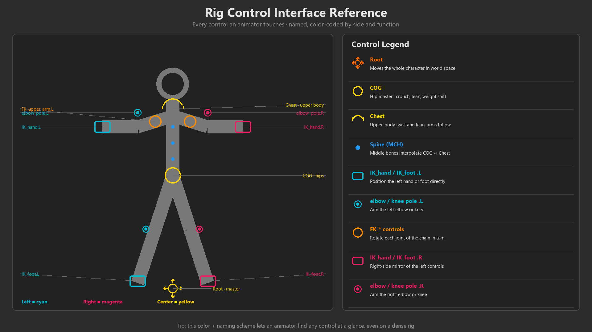
Beyond Biped Rigging
💡 Applying These Principles
Quadruped Characters (dogs, horses, cats):
- Same arm rig principles apply to front legs
- Same leg rig principles apply to back legs
- Spine typically longer, more segments
- Add tail rig (FK chain or spline IK)
Creatures (dragons, aliens, monsters):
- Wings use arm rig principles (shoulder, elbow, wrist = wing base, mid, tip)
- Tails use FK chain or spline IK (same as snake)
- Tentacles use spline IK with multiple controls
- Multiple limbs: Each follows limb rigging principles
Mechanical Rigs (robots, vehicles):
- FK dominant (gears, pistons have defined rotation points)
- Limit Rotation constraints essential (mechanical range limits)
- Copy Rotation for connected parts (gear A drives gear B)
- Stretch To for pistons/hydraulics
Facial Rigs:
- Bones control shape keys (facial expressions)
- Jaw bone with Limit Rotation (realistic mouth opening)
- Eye bones with Track To (look at target)
- Complex topic deserving separate study
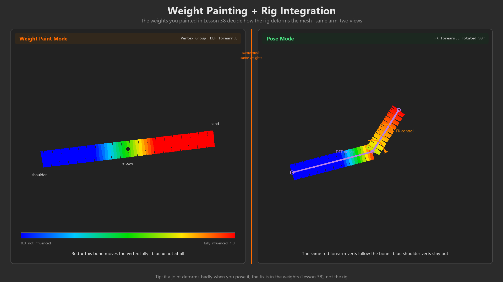
Next Steps in Rigging
🚀 Continuing Your Rigging Journey
Immediate Practice:
- Rig different character types (thin, heavy, stylized)
- Try quadruped rigging (use same principles)
- Experiment with mechanical rigs (robots, vehicles)
- Add advanced features to your biped (fingers, facial controls)
Advanced Topics to Explore:
- Rigify addon: Blender's built-in auto-rigging system (study how it works)
- Python rigging scripts: Automate repetitive rigging tasks
- Bendy Bones: Smooth bone bending with automatic segments
- Stretchy IK: Limbs that can extend beyond natural length (cartoon rigs)
- Spline IK: Bones follow curve (snakes, tails, tentacles)
- Twist Bones: Automatic shoulder/forearm twisting
- Corrective Shape Keys: Fix deformation in extreme poses
Resources:
- Blender Rigify source code (learn from professionals)
- Animation studio breakdowns (how pros solve rigging challenges)
- Rigging reels on YouTube/Vimeo (see rig capabilities)
- Character TD community forums (share work, get feedback)
💭 Final Wisdom: Rigging is equal parts technical skill and artistic understanding. The technical side is constraints, hierarchies, and math. The artistic side is understanding how animators think, anticipating their needs, and designing controls that feel intuitive. The best riggers are those who've spent time animating—they know what frustrates animators and design rigs to eliminate those frustrations. If you want to master rigging, try animating with your own rigs. You'll quickly discover what works and what doesn't, and that feedback loop makes you better at both rigging AND animation!
🎓 Rigging Essentials Complete!
You've mastered professional character rigging! Your weighted character is now a fully functional, animation-ready rig with IK/FK systems, custom controls, and professional organization. You understand the principles that drive ALL character rigging, from biped humans to alien creatures.
This rig is your foundation for character animation. In upcoming lessons, you'll use these rigging skills to create animated performances that bring your characters to life!
Module 9: Character Creation is complete! Ready for advanced topics? 🚀
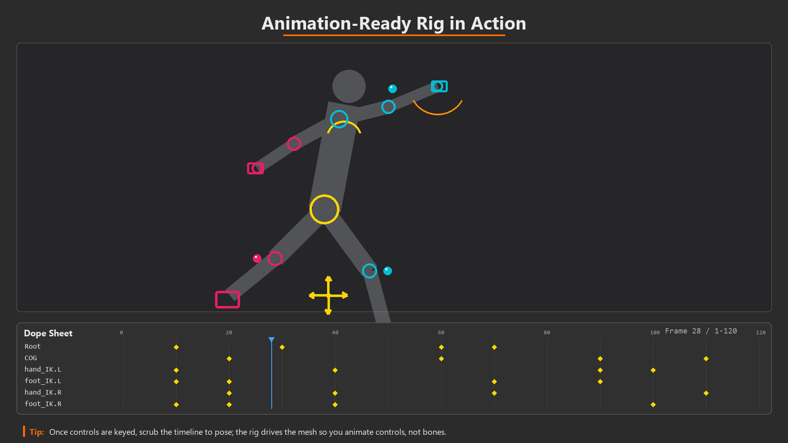